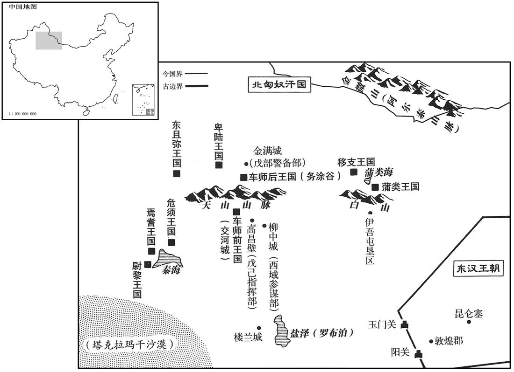
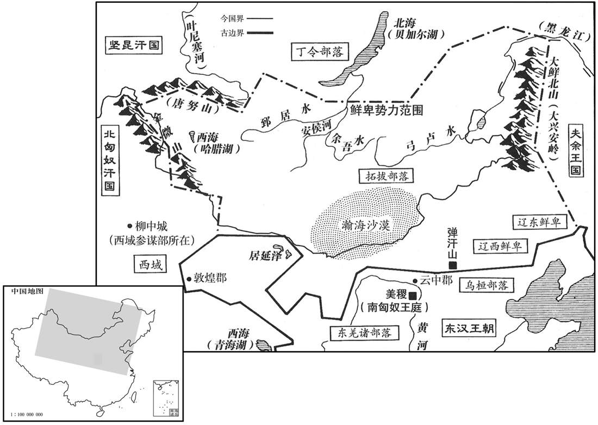

卷次与人物目录 / 卷53
资治通鉴 · 卷第五十三【汉纪四十五】
公元146年至公元156年 · 原文、白话与胡三省注
本页按胡注本编排保存全卷内容。白话采用本站所据译本，未可靠对应的内容另列说明；事件标题用于定位，并非原书文字。
本卷共107段原文，107段有译文对应，0段缺译或待核对。
卷第五十三【汉纪四十五】起柔兆淹茂（丙戌），尽柔兆涒滩（丙申），凡十一年。
卷首原文与注释
孝质皇帝〔讳缵，章帝曾孙，勃海孝王鸿之子也。谥法：忠正无邪曰质。伏侯古今注曰：「缵」之字曰：「继」。〕
公元146年 · 汉孝质皇帝本初元年
本初元年〔（丙戌、一四六）〕
上传原文的注释括号有异常，字符原样保留；无法可靠划分的段落默认全文显示。
本年事件索引（现代整理）
夏，四月，庚辰，令郡、国举明经诣太学，自大将军以下皆遣子受丛；岁满课试，拜官有差。又千石、六百石、四府掾属、三署郎、〔三署郎，五官署郎及左、右署郎也，属光禄勋。掾，俞绢翻。〕四姓小侯先能通经者，各令随家法，其高第者上名牒，〔此时盖以梁氏入四姓；阴、窦诸后族衰废者未必得预也。名牒者，书名于牒上之。上，时掌翻。〕当以次赏进。自是游学增盛，至三万余生。〔此邓后临朝之故智，梁后踵而行之耳。游学增盛，亦干名蹈利之徒，何足尚也！或问曰：太学诸生三万人，汉末互相标榜，清议此乎出，子尽以为干名蹈利之徒，可乎﹖答曰：积水成渊，蛟龙生焉，谓其间无其人则不可；然互相标榜者，实干名蹈利之徒所为也。祸李膺诸人者，非太学诸生，诸生见其立节，从而标榜，以重清议耳。不然，则郭泰、仇香亦游太学，泰且拜香而欲师之，泰为八顾之首，仇香曾不预标榜之列，岂清议不足尚欤﹖抑香隐德无能名欤﹖〕
夏季，四月庚辰（二十五日），命各郡、各封国推荐通晓经书的“明经”到太学。大将军以及文武官员，也都送自己的儿子到太学上课。学习期满一年后进行考试，根据考试成绩的高下，分别任命不同的官职。又命令官秩为千石或六百石的官吏，大将军、太尉、司徒、司空等四府的掾属，五官、左、右等三署的郎，以及四姓外戚小侯中已能通晓经书的人，让他们每自遵守师承的“家法”，凡考试成绩优良，能被列入高第的，则登记在名册上，依照次序升迁官职。从此以后，各地到太学留学的人大大增多，太学生增加到三万余人。
五月，庚寅，徙乐安王鸿为勃海王。
五月庚寅（初六），改封乐安王刘鸿为勃海王。
海水溢，漂没民居。
海水倒灌，淹没人民的住宅。
六月，丁巳，赦天下。
六月丁巳（初三），大赦天下。
帝少而聪慧，〔少，诗照翻。〕尝因朝会，目梁冀曰：〔目者，眨目而注视之。朝，直遥翻。〕「此跋扈将军也！」〔贤曰：跋扈，犹强梁也。余按尔雅，山卑而大，扈。跋者，不由蹊隧而行。言强梁之人行不由正路，山卑而大，且欲跋而踰之，故曰跋扈。蜀本注甚鄙浅，兹不复录，详见辨误。〕冀闻，深恶之。〔恶，乌路翻；下同。〕闰月，甲申，冀使左右置毒于煮饼而进之；〔煮饼，今汤饼也。释名：饼，并也，溲麦裇使合并也。束晢曰：礼，仲春之月，大子食麦；而朝事之笾，煮麦为裇。内则，诸馔不说単。単之作也，其来近矣。汤単，煮裇也。黄庭坚文：煮麦深注汤。〕帝苦烦盛，〔【章：乙十六行本「盛」作「甚」；乙十一行本同；张校同。】〕使促召太尉李固。固入前，问帝得患水。」〔吐，土故翻，呕也。〕语未绝而崩。〔年九岁。〕固伏尸号哭，〔言伏地而号哭，其状如尸也。号，户高翻。〕推举侍医；冀虑其事泄，大恶之。〔推举者，劾举其侍疾无状，而推究其奸也。设于此时固能穷冀弒君之罪，傥不能正其诛，以身死之，岂不忠壮！即不能然，又且俛首于其间，欲以立长之议矫而正之，卒死于凶竖之手，可谓忠有余而才不足矣。恶，乌路翻。〕
两版字句有差异，建议核对原文。
质帝年幼，但聪明智慧，曾在一次早朝时，眨眼看着梁冀，说：“这是跋扈将军！”梁冀听到以后，对质帝深恶痛绝。闰六月甲申（初一），梁冀让质帝身边的侍从把毒药放在汤饼里，给质帝进上。药性发作，质帝非常难受，派人急速传召太尉李固。李固进宫，走到质帝榻前，询问质帝得病的来由。质帝还能讲话，说：“我吃过汤饼，现在觉得腹中堵闷，给我水喝，我还能活。”梁冀这时也站在旁边，阻止说：“恐怕呕吐，不能喝水。”话还没有说完，质帝已经驾崩。李固伏到质帝的尸体上号哭并弹劾侍候质帝的御医。梁冀担心会泄露下毒的真相，对李固非常痛恨。
将议立嗣，固与司徒胡广、司空赵戒先与冀书曰：「天下不幸，频年之间，国祚三绝。〔贤曰：顺帝崩，冲帝立，一年崩。质帝立，一年崩。凡三绝。〕今当立帝，天下重器，诚知太后垂心，将军劳虑，详择其人，务存圣明；然愚情眷眷，窃独有怀。远寻先世废立旧仪，近见国家践祚前事，未尝不询访公卿，广求群议，令上应天心，下合众望。传曰：『以天下与人易，为天下得人难。』〔孟子之言。为，于伪翻。〕昔昌邑之立，昏乱日滋；霍光忧愧发愤，悔之折骨。〔折，而设翻。〕自非博陆忠勇，延年奋发，大汉之祀，几将倾矣。〔事见二十四卷昭帝元平元年。几，居希翻。〕至忧至重，可不熟虑！悠悠万事，唯此为大；〔就冀而言，万事皆可付之悠悠，至于立嗣，关天下国家之大。〕国之兴衰，在此一举。」冀得书，乃召三公、中二千石、列侯，大议所立。固、广、戒及大源�之骧鴐�以为清河王蒜明德着闻，又属最尊亲，〔蒜于质帝为兄，尊也。同出乐安王宠，亲也。胪，陵如翻。〕宜立为嗣，朝廷〔【章：乙十六行本「廷」作「臣」；乙十一行本同；孔木同；张校同。】〕莫不归心。而中常侍曹腾尝谒蒜，蒜不为礼，宦者由此恶之。〔恶，乌露翻。〕初，平原王翼既贬归河间，〔事见五十卷安帝建光元年。〕其父请分蠡吾县以侯之；〔蠡吾县，前汉属涿郡，时属河间国。贤曰：蠡吾故城在今瀛州博野县西。蠡，音礼。翼父，河间孝王开也。〕顺帝许之。翼卒，子志嗣；梁太后欲以女弟妻志，〔妻，七细翻。〕征到夏门亭。会帝崩，梁冀欲立志。众论既异，愤愤不得意，而未有以相夺。〔贤曰：未有别理而易夺之。〕曹腾等闻之，夜往说冀曰：「将军累世有椒房之亲，〔说，输芮翻；下同。累世淑房，谓恭怀后及太后也。〕秉摄万机，宾客纵横，〔横，户孟翻。〕多有过差。清河王严明，若果立，则将军受祸不久矣！不如立蠡吾侯，富贵可长保也。」冀然其言，明日，重会公卿，〔重，直用翻，再也。〕〔冀意气凶凶，〔凶凶，言意气恶暴也。〕言辞激切，自胡广、赵戒以下莫不慑惮，〔慑，之舌翻。〕皆曰：「惟大将军令！」独李固、杜乔坚守本议。冀厉声曰：「罢会！」固犹望众心可立，〔以众心属于清河王，犹望可立也。〕复以书劝冀，〔复，扶又翻。〕冀愈激怒。丁亥，冀说太后，先策免固。〔为杀李固、杜乔张本。〕戊子，以司徒胡广为太尉；司空赵戒为司徒，与大将军�为捁轜|书事；太仆袁汤为司空。汤，安之孙也。庚寅，使大将军冀持节以王青盖车迎蠡吾侯志入南宫；其日，即皇帝位，时年十五。太后犹临朝政。
在商议确定继承帝位的人选之前，李固和司徒胡广、司空赵戒，先给梁冀写信说：“天下不幸，连续几年间，帝王之位，三次断绝。现在将立新的皇帝，帝位是天下最重要的，我们深知皇太后的关切和大将军的苦虑，将仔细地选择一位合适的人选，得到一位圣明的帝王。然而，我们也愚昧地思念关切着这件大事。无论是远求先代有关废黜和选立皇帝的旧制，还是近观皇帝登极的前例，没有一次不询问三公九卿，广泛征求大家意见的，使继承帝位的人选，上应天心，下合众望。经传上说：‘把天下送人是容易的，为天下得人却非常困难。’过去，昌邑王登极之后，昏乱日甚一日，霍光忧愁惭愧而又愤慨，悔恨至极。如果不是霍光的忠贞和勇气，田延年的奋发举动，汉朝的宗庙祭祀几乎被昌邑王倾覆。确定继承帝位的人选，的确是一件最令人忧虑，也是最重要的大事，岂可不深思熟虑！天下的事千头万绪，都可暂缓，只有选择继承帝位的人选是最重大的事，国家兴衰，在此一举。”梁冀看到这封信，于是召集三公、二千石官员和列侯，共同讨论继承帝位的人选。李固、胡广、赵戒及大鸿胪杜乔都认为，清河王刘蒜以完美的德行而著称，皇家的血统又最尊、最亲，应该立为皇位继承人，朝廷的文武官员，全都归心于他。然而，中常侍曹腾曾经有一次去拜见刘蒜，刘蒜没有向他施礼，宦官们从此憎恨刘蒜。当初，平原王刘翼被贬逐回到河间国以后，他的父亲河间王刘开曾请求分出蠡吾县，将刘翼封为蠡吾侯，顺帝批准。刘翼去世后，他的儿子刘志继位为蠡吾侯。梁太后想把她的妹妹嫁给刘志为妻，征召刘志来京都洛阳。刘志抵达夏门亭时，正遇上质帝驾崩，梁冀便打算立刘志为帝。既然群臣的议论都与自己的主张不同，梁冀愤然不快，但又没有办法强迫别人。曹腾等人听到消息后，夜间去对梁冀说：“将军几代都是皇亲国戚，又亲自掌握朝廷大权，宾客布满天下，有许多过失和差错。清河王严厉明察，假如真立为皇帝，那么将军不久就会大祸临头了！不如拥戴蠡吾侯为帝，富贵可以长久保全。”梁冀赞成他们的意见。于是，次日，重新召集三公、九卿进行讨论。梁冀在会上气势汹汹，言辞激烈率直，从司徒胡广和司空赵戒以下的官员，没有一个不感到畏惧，都说：“我们只听大将军的命令！”唯独太尉李固和大鸿胪杜乔坚持原来的主张。梁冀厉声喝道：“散会！”可是，李固仍认为刘蒜是众望所归，有被立的可能，于是再次写信劝说梁冀，梁冀更加激怒。丁亥（初四），梁冀劝说梁太后，先颁策将太尉李固免职。戊子（初五），任命司徒胡广为太尉，司空赵戒为司徒，和大将军梁冀共同主管尚书事务。又擢升太仆袁汤为司空。袁汤是袁安的孙子。庚寅（初七），梁太后派大将军梁冀持符节，用封王的皇子乘用的青盖车迎接蠡吾侯刘志进入南宫。当天，刘志即皇帝位。当时，他年十五岁。梁太后仍然临朝听政。
秋，七月，乙卯，葬孝质皇帝于静陵。〔贤曰：静陵，在雒阳东南三十里。〕
秋季，七月乙卯（初二），将质帝安葬于静陵。
大将军掾朱穆奏记劝戒梁冀曰：「明年丁亥之岁，刑德合于干位，〔贤曰：历法，太岁在丁、壬，岁德在北宫；太岁在亥、卯，岁刑亦在北宫；故曰合于干位。掾，俞绢翻。〕易经龙战之会，〔易坤卦上六，龙战于野，阴疑于阳也。〕阳道将胜，阴道将负。愿将军专心公朝，〔朝，直遥翻。〕割除私欲，广求贤能，斥远佞恶，为皇帝置师傅，〔远，于愿翻。为，于伪翻。〕得小心忠笃敦礼之士，将军与之俱入，参劝讲授，师贤法古，此犹倚南山、坐平原也，〔喻其安而无倾。〕谁能倾之！议郎大夫之位，本以式序儒术高行之士，〔式，用也。〕今多非其人，九卿之中亦有乖其任者，惟将军察焉！」又荐种暠、栾巴等，冀不能用。穆，晖之孙也。〔朱晖事章帝。〕
大将军掾朱穆上书劝诫梁冀说：“明年是丁亥年，刑罚和恩德，都集合在北方的乾位。《易经》上说：龙战于野，表示阳道将获得胜利，阴道将受到挫败。愿将军尽忠朝廷，割舍私欲，广泛征求贤能人才，排斥和疏远奸佞和邪恶之辈。为皇帝选置师傅时，要选择谨慎小心、忠良朴实、笃信礼义之士。将军与师傅一道进宫，参与劝学，效法古圣先贤。这就犹如背靠南山，稳坐平原一样，非常安全，有谁能倾覆您？议郎和大夫的职位，本来应该任用精通儒术和德行高尚的人士，可现在任职的多数不是这样的人，九卿中也有不能胜任的，请将军留心考察。”又推荐种、栾巴等人，梁冀不能任用。朱穆，即朱晖的孙子。
九月，戊戌，追尊河间孝王为孝穆皇，夫人赵氏曰孝穆后，〔谥法：布德执义曰穆；中情见貌曰穆。〕庙曰清庙，陵曰乐成陵；〔乐成县，属河间国。〕蠡吾先侯曰孝崇皇，〔沈约曰：谥法所不载者，如孝崇皇之类是也。〕庙曰烈庙，陵曰博陵；〔贤曰：博陵，本蠡吾县之地也；陵在今瀛州博野县西。〕皆置令、丞，使司徒持节奉策书玺绶，祠以太牢。〔玺，斯氏翻。绶，音受。〕
九月戊戌（疑误），桓帝刘志追尊其祖父河间孝王刘开为孝穆皇，祖母赵氏为孝穆后，祭庙名为清庙，陵园名为乐成陵；追尊其父蠡吾侯刘翼为孝崇皇，祭庙名为烈庙，陵园名为博陵；都设置令、丞掌管，并派司徒持节，捧着皇帝颁发的策书和玺印绶带前往，用牛、羊、猪各一头的太牢之礼进行祭祀。
冬，十月，甲午，尊帝母匽氏为博园贵人。〔匽，音偃。史记：匽姓，咎繇之后。贵人讳明，本蠡吾侯之媵妾。博园，博陵寝园。〕
冬季，十月甲行（十二日），桓帝尊母亲氏为博园贵人。
滕抚性方直，不交权势，为宦官所恶；论讨贼功当封，〔讨扬、徐贼之功也。恶，乌路翻。〕太尉胡广承旨奏黜；卒于家。
滕抚性情方正刚直，不肯结交权贵，宦官对他非常憎恨。评定讨伐盗贼的功劳，滕抚应该封侯，但太尉胡广秉承权贵的意旨，对滕抚进行弹劾，使他遭到罢黜。后来，滕抚死在家里。
原书衔接
孝桓皇帝上之上〔讳志，章帝曾孙，蠡吾侯翼之子。谥法：克敌服远曰桓。伏侯古今注：「志」之字曰「意」。〕
公元147年 · 汉孝桓皇帝建和元年
建和元年〔（丁亥、一四七）〕
上传原文的注释括号有异常，字符原样保留；无法可靠划分的段落默认全文显示。
本年事件索引（现代整理）
春，正月，辛亥朔，日有食之。
春季，正月辛亥朔（初一），出现日食。
戊午，赦天下。
戊午（初八），大赦天下。
三月，龙见谯。〔谯县，属沛国。见，贤遍翻。〕
三月，龙在谯县显现。
夏，四月，庚寅，京师地震。
夏季，四月庚寅（十一日），京都洛阳发生地震。
立阜陵王代兄勃遒亭侯便为阜陵王。〔阜陵王延传国五世，至代；代薨，无子，国绝。今以便绝封。遒，才由翻。〕
封阜陵王刘代的哥哥勃遒亭侯刘便为阜陵王。
六月，太尉胡广罢，光禄勋杜乔为太尉。〔考异曰：帝纪云：「大司农杜乔」，乔传：乔自司农累迁为大鸿胪、光禄勋，乃为太尉。袁纪亦然。荀淑传云：「光禄勋杜乔举淑方正。」今从之。〕自李固之废，朝野丧气，〔丧，息浪翻。〕群臣侧足而立；唯乔正色无所回桡，〔贤曰：回，邪也。桡，曲也。桡，音奴高翻。〕由是朝野皆望焉。
六月，太尉胡广被免职，擢升光禄勋杜乔为太尉。自从李固遭废黜后，朝廷和民间都感到沮丧。群臣害怕得不敢正立。唯独杜乔保持一身正气，不肯屈服。因此，朝廷和民间都依赖并寄希望于他。
秋，七月，渤海孝王鸿薨，无子；太后立帝弟蠡吾侯悝为渤海王，以奉鸿祀。〔悝，苦回翻。〕
秋季，七月，勃海孝王刘鸿去世，没有儿子。梁太后封桓帝的弟弟蠡吾侯刘悝为勃海王，以祭祀刘鸿做他的继承人。
诏以定策功，益梁冀万三千户，封冀弟不疑为颖阳侯，〔颖阳县，属颖川郡。〕蒙为西平侯，冀子胤为襄邑侯，胡广为安乐侯，〔按广传，封淯阳县之安乐乡。乐，音洛。〕赵戒为厨亭侯，袁汤为安国侯。〔安国亦亭侯。〕又封中常侍刘广等皆为列侯。〔按曹腾传：广、腾及州辅等七人皆封亭侯。〕
桓帝下诏，因拥立皇帝决策有功，增封梁冀食邑一万三千户，封梁冀的弟弟梁不疑为颍阳侯，梁蒙为西平侯，梁冀的儿子梁胤为襄邑侯，胡广为安乐侯，赵戒为厨亭侯，袁汤为安国侯。又将中常侍刘广等人，都封为列侯。
杜乔谏曰：「古之明君，怕以用贤、赏罚为务。失国之主，其朝岂无贞干之，〔贞，与桢同；干，与干同。筑桓墙必须桢干，以喻立国必须贤才。朝，直遥翻。〕典诰之篇哉﹖谓封爵之典策诏诰，以授有功，具有故事。〕患得贤不用其谋，韬书不施其教，闻善不信其义，听谗不审其理也。陛下自藩臣即位，天人属心，〔属，之欲翻；下冀属同。〕不急忠贤之礼而先左右之封，〔先，悉荐翻。〕梁氏一门，宦者微孽，并带无功之绂，裂劳臣之土，〔孽，鱼列翻。绂，音弗。〕其为乖滥，胡可胜言！〔胜，音升。〕夫有功不赏，为善失其望；奸回不诘，为恶肆其凶。〔诘，去吉翻。〕故陈资斧而人靡畏，〔前书音义曰：资，利也。〕班爵位而物无劝。苟遂斯道，岂伊伤政为乱而已，丧身亡国，可不慎哉！」书奏，不省。〔丧，息浪翻。省，悉景翻。考异曰：乔传此章在为太尉前，袁纪在为太尉后。今从袁纪。〕
杜乔上书进谏说：“自古以来，圣明的君王，都以任用贤能和赏功罚罪，作为头等大事。亡国的君王，他的朝廷，难道没有忠贞干练的栋梁之臣和赏功罚罪的典章制度吗？问题在于，虽有贤能，而不能任用；虽有典章制度，而不能施行；听到忠直的建议，却不相信；而听到谗言时，又不能洞察奸邪。陛下从诸侯王登上至尊宝座，天人归心，不先去礼敬忠贞贤能，而是先封自己身边的人。梁家一门和宦官卑微之辈，都佩带上无功而得到的官印和绶带，分得了只有功臣才应得到的封土，乖谬而无节制，不能用言语形容！对有功的人不加赏赐，就会使为善的人感到失望；对邪恶的人不加惩罚，就会使作恶的人更加肆无忌惮地逞凶。所以，即使将砍头的利斧放在面前，人也不畏惧，将封爵官位悬在面前，人也不动心。如果采取这种办法，岂只是伤害政事，使朝正混乱而已，甚至还要丧身亡国，可以不慎重吗！”奏章呈上后，桓帝没有理睬。
八月，乙未，立皇后梁氏。〔考异曰：皇后纪、袁纪皆云八月而无日，帝纪云「七月，乙未」。以长历考之，七月戊申朔，无乙未。乙未，八月十八日也。盖帝纪脱「八月」字。〕梁冀欲以厚礼迎之，杜乔据执旧典，不听。〔汉书旧仪：聘皇后，黄金万斤。吕后为惠帝娶鲁元公主女，特优其礼，为二万斤。仪礼：纳采用鴈。郑玄注云：纳其注云：纳其采择之礼，用鴈，取顺阴阳往来也。周礼：王者谷圭以聘女。郑玄曰：士大夫以上乃以玄纁、束帛；天子加以谷圭；诸侯加以大璋。礼言以圭，而汉用璧，形制虽异，为玉同也。时依孝惠纳后故事，聘黄金二万斤，纳采鴈、璧、乘马、束帛，一依旧典。乘马，马四匹也。杂记曰：纳币一束，束五两，两五寻。盖每端二丈也。〕冀属乔举泛宫为尚书，〔属，之欲翻。泛，符咸翻，姓也。皇甫谧曰：本姓凡氏，遭奏乱，避地于泛水，因氏焉。〕乔以宫为臧罪，不用。〔臧，古赃字通。〕由是日忤于冀。〔忤，五故翻。〕九月，丁卯，京师地震。乔以灾异策免。冬，十月，以司徒赵戒为太尉，司空袁汤为司徒，前太尉胡广为司空。
八月乙未（十八日），桓帝册封梁太后和梁冀的妹妹梁女莹为皇后。梁冀打算用厚礼迎亲，杜乔根据旧有的典章，予以反对。梁冀又嘱托杜乔推荐宫担任尚书，杜乔因宫曾经犯过贪污罪，不肯答应。从此，杜乔越来越为梁冀所忌恨。九月丁卯（二十一日），京都洛阳发生地震。杜乔因天降灾异而被免官。冬季，十月，任命司徒赵戒为太尉，司空袁汤为司徒，前任太尉胡广为司空。
宦者唐衡、左悺共谮杜乔于帝〔贤曰：悺，音工唤翻，又音绾。〕曰：「陛下前当即位，乔与李固抗议，以为不堪奉汉宗祀。」〔贤曰：抗，举也。宗祀，大宗之祀也。〕帝亦怨之。
宦官唐衡、左一道向桓帝诬陷杜乔说：“陛下先前将即位时，杜乔和李固反对，认为您不能胜任侍奉汉朝宗庙的祭祀。”因此桓帝对杜乔和李固也心生怨恨。
十一月，清河刘文与南郡妖贼刘鲔交通，〔鲔，于轨翻。〕妄言「清河王当统天下」，欲共立蒜。事笕觉，文等遂劫清河相谢暠曰：「当立王为天子，以暠为公。」暠骂之，文刺杀暠。于是捕文、鲔，诛之。有司劾奏蒜；〔暠，工老翻。刺，七亦翻。劾，户概翻，又户得翻。〕坐贬爵为尉氏侯，〔尉氏县，属陈留郡。应劭曰：古狱官曰尉氏，郑之别狱也。臣瓒曰：郑大夫尉氏之邑，故以为邑名。〕徙桂阳，自杀。
十一月，清河人刘文和南郡的妖贼刘鲔相勾结，胡妄宣称：“清河王刘蒜应当统御天下。”打算共同拥立刘蒜为皇帝。此事被发觉，刘文等人便劫持清河国相谢，对他说：“应当拥立清河王刘蒜当皇帝，由您当三公。”谢诟骂他们，刘文将他刺杀。于是，朝廷逮捕刘文和刘鲔，将其诛杀。有关官吏上奏弹劾刘蒜，刘蒜因罪被贬爵为尉氏侯，并被放逐到桂阳，刘蒜自杀。
梁冀因诬李固、杜乔，云与文、鲔等交通，请逮按罪；太后素知乔忠，不许。〔考异曰：乔传云「策免而已」。乔前已免官，传误也。〕冀遂收固下狱；〔下，遐稼翻。〕门生渤海王调贯械上书，证固之枉，河内赵承等数十人亦要鈇锧诣阙通诉；〔要，读曰腰。鈇，斧也。锧，音质，椹也。〕太后诏赦之。及出狱，京师市里皆称万岁。冀闻之，大惊，畏固名德终为己害，乃更据奏前事。〔前事，即文、鲔事也。〕大将军长史吴佑伤固之枉，与冀争之；冀怒，不从。从事中郎马融主为冀作章表，融时在坐，〔为，于伪翻。坐，左卧翻。〕佑谓融曰：「李公之罪，成于卿手。李公若诛，卿何面目视天下人！」〔言为冀诬陷忠良，将无颜以见人也。〕冀怒，起，入室；佑亦径去。固遂死于狱中；临命，与胡广、赵戒书曰：「固受国厚恩，是以竭其股肱，不顾死亡，志欲扶持王室，比隆文、宣。〔贤曰：文帝、宣帝皆群臣迎立，能兴汉祚。〕何图一朝梁氏迷谬，公等曲从，以吉为凶，成事为败乎！汉家衰微，从此始矣。公等受主厚禄，颠而不扶，倾覆大事，后之良史岂有所私！固身已矣，于义得矣，夫复何言！」〔复，扶又翻。〕广、戒得书悲凓，皆长叹流涕而已。
于是，梁冀诬陷李固、杜乔，指控他们和刘文、刘鲔等人互相勾结，请求将其逮捕治罪。梁太后一向了解杜乔忠直，不肯答应。梁冀便将李固一个人逮捕下狱。李固的门生、渤海人王调，身戴刑具向朝廷上书谏争，说李固冤枉。河内人赵承等数十人，也带着执行腰斩时用的刑具到宫门上诉。于是，梁太后下诏释放李固。等到李固出狱之时，京都洛阳的大街小巷都齐呼万岁。梁冀听到消息后，大为惊骇害怕李固的声名和品德终将伤害自己，于是重向新朝廷弹劾李固和刘文、刘鲔相勾结的旧案。大将军长史吴对李固的冤狱深为伤感，向梁冀据理力争。梁冀大怒，不肯听从。从事中郎马融负责为梁冀起草奏章，当时他正好在座，吴便责问马融说：“李固的罪状，是你一手罗织出来的，李固如果被诛杀，你还有什么脸面去见天下人！”梁冀一怒而起，进入内室，吴也迳直离去。李固于是死在狱中。他临死之前，写信给胡广、赵戒说：“我李固受国家厚恩，所以竭尽忠心，不顾死亡大祸，目的是想辅佐皇室，使它在功业上可以和汉文帝、宣帝时期比美。怎料梁氏一时荒廖作乱，你们曲意顺从，将吉祥化作凶恶，成功之事化为失败！汉王朝衰落，从此开始。你们接受帝王丰厚的俸禄，眼看朝廷就要倒塌，却不肯扶持。倾覆朝廷的大事，后世优秀史官怎会有所偏袒！我的生命已完结了，但是尽到了大义，还要再说什么！”胡广、赵戒看到李固所写的遗书后，感到悲伤惭愧，但也都不过是长叹流泪而已。
冀使人胁杜乔曰：「早从宜，〔贤曰：从宜，令其自尽也。〕妻子可得全。」乔不肯。明日，冀遣骑至其门，〔骑，奇寄翻。〕不闻哭者，遂白太后收系之；亦死狱中。
其后，梁冀又派人威胁杜乔说：“你应该快点自杀，妻子和儿女可以得到保全。”杜乔不肯接受。第二天，梁冀派人骑马到杜乔家门，没有听到里面有人啼哭，于是报告梁太后，将杜乔逮捕下狱。杜乔也死在狱中。
冀暴固、乔尸于城北四衢，令：「有敢临者加其罪。」〔尔雅曰：四达谓之衢。城北，即夏门亭也。临，力鸩翻，哭也。〕固弟子汝南郭亮尚未冠，左提章、钺，〔冠，古玩翻。贤曰：章，谓所上章也。钺，斧也。〕右秉鈇锧，诣阙上书，乞收固尸，不报；与南阳董班俱往临哭，守丧不去。夏门亭长呵之曰：「卿曹何等腐生！〔贤曰：腐生，犹言腐儒也。〕公犯诏书，欲干试有司乎！」亮曰：「义之所动，岂知性命！何为以死相惧邪！」太后闻之，皆赦不诛。杜乔故掾陈留杨匡，号泣星行，〔掾，俞绢翻。号，户刀翻。星行者，见星而行，见星而舍。或曰星行者，言戴星而行，夜不遑息也。〕到雒阳，着故赤帻，托为夏门亭吏，〔吏，着赤帻。着，则略翻。〕守护尸丧，积十二日；都官从事执之以闻，〔都官从事，司隶校尉之属官也，掌举中都官非法者。〕太后赦之。匡因诣阙上书，并乞李、杜二公骸骨，使得归葬，太后许之。匡送乔丧还家，〔乔家河内。〕葬讫，行服，遂与郭亮、董班皆隐匿，终身不仕。
梁冀把李固、杜乔的尸首，放在洛阳城北十字路口示众，下令：“有敢来哭泣吊丧的，予以惩治。”李固的学生、汝南人郭亮，还不到二十岁，左手拿着奏章和斧子，右手抱着铁砧，到宫门上书，乞求为李固收尸，没有得到答复。郭亮又和南阳人董班一同去吊丧哭泣，守着尸体不走。夏门亭长喝斥说：“你们是何等迂腐的书生！公然冒犯皇帝的圣旨，想试试官府的厉害吗！”郭亮回答说：“我们为他们的大义所感动，岂知顾及自己的性命？为什么要用死来威胁呢？”梁太后听到后，将郭亮、董班二人全都赦免。杜乔从前的属吏、陈留杨匡，悲号哭泣，星夜赶到京都洛阳，穿上旧官服，头戴束发的赤巾，假称是夏门亭吏，在杜乔的尸体旁护丧，达十二天之久。都官从事将他逮捕，奏报朝廷，梁太后将他赦免。于是杨匡到宫门上书，向朝廷请求使李固和杜乔的尸体得以归葬家乡。梁太后批准。于是，杨匡将杜乔的灵柩送回家乡，安葬完毕，又为他服丧，于是和郭亮、董班都藏匿起来，终身不出来做官。
梁冀出吴佑为河间相，佑自免归，卒于家。〔卒，子恤翻。〕
梁冀命吴出任河间国相，吴自己辞官归家，后在家中去世。
冀以刘鲔之乱，思朱穆之言，于是请种暠为从事中郎，荐栾巴为议郎，举穆高第，为侍御史。〔穆于大将军府掾为高第也。〕
梁冀因刘鲔谋反，想起朱穆以前向他提出的建议，于是聘请种担任从事中郎，推荐栾巴为议郎。并因朱穆考绩最优而进行保举，将他任命为侍御史。
是岁，南单于兜楼储死，伊陵尸逐就单于车儿立。〔车，音尸遮翻。〕
同年，南匈奴单于兜楼储去世，车儿继位，号为伊陵尸逐就单于。
公元148年 · 汉孝桓皇帝建和二年
二年〔（戊子、一四八）〕
春，正月，甲子，帝加元服。庚午，赦天下。
春季，正月甲子（十九日），桓帝行成年加冠礼。庚午（二十五日），大赦天下。
三月，戊辰，帝从皇太后幸大将军冀府。
三月戊辰（二十四日），桓帝跟随梁太后临幸大将军梁冀府。
白马羌寇广汉属国，〔安帝以蜀郡北部都尉为广汉属国都尉。〕杀长吏。益州刺史率板楯蛮讨破之。〔楯，食尹翻。〕
白马种羌人攻打广汉属国，杀害地方官吏。益州刺史率领板蛮人将其击破。
夏，四月，丙子，封帝弟顾为平原王，奉孝崇皇祀；尊孝崇皇夫人为〔【章：乙十六行本「为」上有「马氏」二字；乙十一行本同；孔本同；退斋校同。】〕孝崇园贵人。
夏季，四月丙子（初三），梁太后下诏，封桓帝的弟弟刘顾为平原王，侍奉孝崇皇的祭祀；尊孝崇皇夫人为孝崇园贵人。
五月，癸丑，北宫掖庭中德阳殿及左掖门火，车驾移幸南宫。
五月癸丑（初十），北宫掖庭中的德阳殿和左掖门失火，桓帝移住南宫。
六月，改清河为甘陵。〔以孝德皇陵为国名。〕立安平孝王得子经侯理为甘陵王，〔烃县，属安平国。贤曰：今贝州经城县。〕奉孝德皇祀。
六月，改清河国为甘陵国。封安平孝王刘得的儿子、经侯刘理为甘陵王，侍奉孝德皇的祭祀。
译本中未与胡注本可靠对应的内容
以下另列供核对版本差异，不并入胡注本正文。
译本所附古文
[7]秋，七月，京师大水。
译本白话
秋季，七月，京都洛阳发生水灾。
公元149年 · 汉孝桓皇帝建和三年
三年〔（己丑、一四九）〕
夏，四月，丁卯挴，日有食之。
夏季，四月丁卯晦（三十日），出现日食。
秋，八月，乙丑，有星孛于天市。〔前书天文志：旗星中四星曰天市。又晋书天文志：天市桓二十二星，在房、心东，彗星除之，为徙市易都。孛，蒲内翻。〕
秋季，八月乙丑（三十日），有异星出现在天市星旁。
京师大水。
京都洛阳发生水灾。
九月，己卯，地震。庚寅，地又震。
九月己卯（十四日），发生地震。庚寅（二十五日），再次发生地震。
郡、国五山崩。
有五个郡和封国发生山崩。
冬，十月，太尉赵戒免；以司徒袁汤为太尉，大司农河内张歆为司徒。
冬季，十月，太尉赵戒被免职，任命司徒袁汤为太尉，擢升大司农、河内人张歆为司徒。
是岁，前朗陵侯相荀淑卒。〔朗陵侯国，属汝南郡。〕淑少博学有高行，〔少，诗照翻。行，下孟翻。〕当世名贤李固、李膺皆师宗之。在朗陵，麘事明治，〔治，直吏翻。〕称为神君。有子八人：俭、绲、靖、焘、汪、爽、肃、专，〔贤曰：绲，音昆。焘，音导。汪，乌光翻。「专」，本或作「尃」，音敷。〕并有名称，时人谓之八龙。〔称，尺证翻。〕所居里旧名西豪，颍阴令渤海苑康以为昔高阳氏有才子八人，更命其里曰高阳里。〔杜佑曰：颍川郡城西南有荀淑故宅，相传云即西豪里。更，工衡翻。颍阴县，属汝南郡。淑，县人也。姓谱：商武丁子子文受封于苑，因以为氏。左传有齐大夫苑何忌。赵明诚金石录有汉荆州从事苑镇碑曰：其先苑柏何为晋乐正，世掌朝礼；又有苑子园，实能掌阴阳之理：皆其冑也。按姓氏志皆以为出于齐大夫苑何忌之后。今此碑所谓苑柏何与子园，左传、国语皆无其人；故录之以待知者。左传曰：昔高阳氏有才子八人：苍舒、隤叹、梼戭、大临、厖降、庭坚、仲容、叔达。隤，徒回翻。叹，五才翻，一音五回翻；韦昭音瑰。梼，直由翻；韦昭音桃。戭，以善翻；韦昭以震翻。厖，莫江翻。降，下江翻。〕
同年，前任朗陵侯国相荀淑去世。荀淑年轻时，不仅学问渊博，而且德行高尚，当时最著名的贤人李固、李膺，都像对待老师一样地尊崇他。荀淑在朗陵侯国任职，治理政事明快果断，被人们奉若神明。荀淑共有八个儿子：荀俭、荀绲、荀靖、荀焘、荀汪、荀爽、荀肃、荀专，都享有盛名，当时人称他们为“八龙”。荀淑所居住的里名，原来叫西豪里，颍阴县令渤海人苑康，因从前高阳氏有八个多才的儿子，就将西豪里改名为高阳里。
膺性简亢，〔亢，口浪翻，高也。〕无所交接，唯以淑为师，以同郡陈寔为友。荀爽尝就谒膺，因为其御；既还，喜曰：「今日乃得御李君矣！」其见慕如此。
李膺性格简朴正直，跟人很少交往，只把荀淑当作老师，和同郡人陈结交。荀爽曾经去拜见李膺，就势给李膺驾车。回来后，他高兴地说：“今天，我竟得以为李君驾车了！“李膺就是这样被人倾慕。
陈寔出于单微，〔单，独也，薄也。〕为郡西门亭长。同郡锺皓以笃行称，〔行，下孟翻。〕前后九辟公府，年辈远在寔前，引与为友。皓为郡功曹，辟司徒府；临辞，太守问：「谁可代卿者﹖」皓曰：「明府欲必得其人，西门亭长陈寔可。」寔闻之曰：「锺君似不察人，不知何独识我！」太守遂以寔为功曹。时中常侍〔【章：乙十六行本「侍」下有「山阳」二字；乙十一行本同；孔本同；张校同；退斋校同。】〕侯览托太守高伦用吏，伦教署为文学掾，〔郡守所出命曰教。百官志注：郡有文学、守助掾六十人。掾，俞绢翻。〕寔知非其人，怀檄请见，〔贤曰：檄，板书。以高伦之教书之于檄，而怀之者，惧泄事也。〕言曰：「此人不宜用，而侯常侍不可违，寔乞从外署，〔功曹主选署。寔乞从外自署用，若不出于伦者。贤曰：不欲陷伦于请托也。〕不足以尘明德。」伦从之。于是乡论怪其非举，寔终无所言。伦后被征为尚书，郡中士大夫送至纶氏，〔贤曰：纶氏县，属颍川郡，今嵩阳县是。〕伦谓众人曰：「吾前为侯常侍用吏，〔为，于伪翻。〕陈君密持教还而于白署，比闻议者以此少之，〔比，毗至翻。少，诗沼翻。〕此咎由故人畏惮强御，〔故人，伦自谓也。汉人于门生故吏之前，率自称故人。杨震谓王密曰：「故人知君，君不知故人，」是也。诗曰：不畏强御。〕陈君可谓『善则称君，过则称己』者也。」〔礼记坊记曰：善则称君，过则称己，则民作忠。坊，音防。〕寔固自引愆，闻者方叹息，由是天下服其德。后为太丘长，〔贤曰：太丘县，属沛国，故城在今毫州永城县西北。〕修德清静，百姓以安。邻县民归附者，寔辄训导譬解发遣，各令还令。司官行部，〔贤曰：司官，谓主司之官也。行，下孟翻。〕吏虑民有讼者，白欲禁之；寔曰：「讼以求直，禁之，理将何申！其勿其所拘。」司官闻而叹息曰：「陈君所言若是，岂有冤于人乎！」亦竟无讼者。以沛相赋敛违法，解印绶去；〔相，息亮翻。敛，力赡翻。〕吏民追思之。
陈出身贫贱，担任颍川郡西门亭长。同郡人钟皓，以行为厚著称，前后九次被三公府征聘，年龄和辈份都远在陈之上，却跟陈成为好友。钟皓原任郡功曹，后被征聘到司徒府去任职，他向郡太守辞行时，郡太守问：“谁可以接替你的职务？”钟皓回答说：“如果您一定想要得到合适的人选，西门亭长陈可以胜任。”陈听到消息后说：“钟君似乎不会推荐人，不知为什么单单举荐我？”于是，郡太守就任命陈为郡功曹。当时，中常侍侯览嘱托郡太守高伦任用自己所推荐的人为吏，高伦便签署命令，将这个人命为文学掾。陈知道这个人不能胜任，就拿着高伦签署的命令求见，对高伦说：“这个人不可任用，然而侯常侍的意旨也不可违抗。不如由我来签署任命，这样的话，就不会玷污您完美的品德。”高伦听从。于是，乡里的舆论哗然，都奇怪陈怎么会举用这样不合适的人，而陈始终不作分辩。后来，高伦被征召到朝廷去担任尚书，郡太守府的官吏和士绅们都来为他送行，一直送到纶氏县。高伦对大家说：“我前些时把侯常侍推荐的人任命为吏，陈却把我签署的任命书秘密送还，而改由他来任用。我接连听说议论此事的人因此轻视陈，而这件事的责任，是因为我畏惧侯览的势力太大，才这样做的，而陈君可以称得上把善行归于主君，把过错归于自己的人。”但陈仍然坚持是自己的过失，听到的人无不叹息。从此，天下的人都佩服他的品德。后来，陈担任太丘县的县长，修饬德教，无为而治，使百姓得以安居乐业。邻县的人民都来归附，陈总是对他们进行开导和解释，然后遣送他们回到原县。上级官员来县视察，本县的官吏恐怕人民上诉，请求陈加以禁止。陈说：“上诉的目的，是为了求得公平，如果加以禁止，将怎样讲理！不要限制。”前来视察的主管官员听到后，叹息说：“陈君说这样的话，难道会冤枉人吗？”终究也没有人来越级上诉。后来陈担任沛国相，被指控违法征收赋税，他便解下印信，离职而去。官吏和人民都很怀念他。
锺皓素与荀淑齐名，李膺常叹曰：「荀君清识难尚；锺君至德可师。」皓兄子瑾母，膺之姑也。瑾好学慕古，有退让风，〔好，呼到翻。〕与膺同年，俱有声名。膺祖太尉修常言！「瑾似我家性，〔瑾，李氏之出，而退让，故修云然。〕『邦有道，不废；邦无道，免于刑戮。』」〔论语，孔子以此言与南容。〕复以膺妹妻之。〔妻，子细翻。〕膺谓瑾曰：「孟子以为『人无是非之心，非人也』，弟于是何太无皁白邪！」〔皁白易分；无皁白，言无分别也。〕瑾尝以膺言白皓。皓曰：「元礼祖、父在位，〔李膺，字符礼。膺祖修为太尉，父益为赵相。〕诸宗并盛，故得然乎！昔国子好招人过，以致怨恶，〔国语：齐国佐见单襄公，其语尽。单子曰：「立于淫乱之国而好尽言以招人过，怨之本也。」其后齐杀国武子。招，音翘。〕今岂其时邪！必欲保身全家，尔道为贵。」
钟皓一向和荀淑享有同等的声誉，李膺经常叹息说：“荀君的清高和见识，很难学习；钟君的高贵品德，可以为人师表。”钟皓的侄儿钟瑾的母亲，是李膺的姑妈。钟瑾喜爱读书，效法古人，有退让的风度，和李膺同岁，都有名声。李膺的祖父、太尉李经常说：“钟瑾像我们李家人的性格，国家有道，不会久居人下；国家无道，不会受到诛杀。”于是，又把李膺的妹妹嫁给钟瑾为妻。李膺对钟瑾说：“孟子认为，‘人要是没有是非之心，就不是人’，你对于黑白，为何太不分明？”钟瑾曾经将李膺的话，告诉钟皓，钟皓安慰他说：“李膺的祖父、父亲都身居高位，整个家族都很兴盛，所以才能那样做。从前，齐国的国佐专好挑剔别人的过失，以致招来怨恨和报复。现在哪里是黑白分明的时代？如果一定想保全自己的身家性命，还是你的办法最为高明。”
公元150年 · 汉孝桓皇帝和平元年
和平元年〔（庚寅、一五○）〕
本年事件索引（现代整理）
春，正月，甲子，赦天下，改元。
春季，正月甲子（初一），大赦天下。改年号。
乙丑，太后诏归政于帝，始罢称制。二月，甲寅，太后梁氏崩。
乙丑（初二），梁太后下诏，将朝政大权归还给桓帝，从此开始不再行使皇帝权力。二月甲寅（二十二日）梁太后去世。
三月，车驾徙幸北宫。
三月，桓帝迁回北宫居住。
甲午，葬顺烈皇后。增封大将军冀万户，并前合三万户；封冀妻孙寿为襄城君，兼食阳翟租，〔襄城、阳翟二县皆属颍川郡。〕岁入五千万，加赐赤绂，比长公主。〔汉制，公主仪服同公侯，紫绂；长公主仪服同诸王，赤绂；四采赤、黄、缥、姏，长二丈一尺，三百首。绂，音弗。长，知两翻。〕寿善为妖态以蛊惑冀，冀甚宠惮之。〔寿作愁眉、啼妆、堕马髻、折腰步、龋齿笑。妖，于骄翻。〕冀爱监奴秦宫，官至太仓令，〔太仓令，秩六百石，主受郡国传漕谷，属大司农。〕得出入寿所，威橏大震，刺史、二千石皆谒辞之。冀与寿对街为宅，殚极土木，互相夸竞，金玉诊怪，充积藏室；〔藏，徂浪翻；下守藏同。〕又广开园圃，采土筑山，十里九阪，深林绝涧，有若自然，〔冀传云：筑山以象二崤，十里九阪。阪，音反。〕奇禽驯兽飞走其间。冀、寿共乘辇车，游观第内，〔晋志曰：羊车，一名辇车。毛晃曰：辇，步，挽车也。汉书：主驾人以行曰辇。〕多从倡伎，〔倡，音昌。伎，渠绮翻。〕酣讴竟路，或连日继夜以骋娱恣。客到门不得通，皆请谢门者；门者累千金。又多拓林苑，周遍近县，起兔苑于河南城西，经亘数十里，移檄所在调发生兔，刻其毛以为识，〔调，徙吊翻。识，职吏翻。〕人有犯者，罪至死刑。尝有西域贾胡〔贾，音古。〕不知禁忌，误杀一兔，转相告言，坐死者十余人。又起别第于城西，以纳奸亡；〔谓奸民及亡命者。〕或取良人悉为奴婢，至数千口，名曰自卖人。冀用寿言，多斥夺诸梁在位者，外以示谦让，而实崇孙氏。孙氏宗亲冒名为侍中、卿、校、郡守、长吏者十余人，皆贪饕凶淫，〔校，户教翻。饕，土刀翻。〕各使私客籍属县富人，〔贤曰：籍，谓疏录之也。〕被以他罪，〔被，皮义翻。〕闭狱掠拷，〔掠，音亮。拷，音考。〕使出钱自赎，赀物少者至于死。又〔【章：乙十六行本「又」作「徙」；乙十一行本同；孔本同；熊校同。】〕扶风人士孙奋，居富而性吝，〔士孙，姓也；奋，名也。〕冀以马乘遗之，〔乘，绳证翻。遗，于季翻。〕从贷钱五千万，奋以三千万与之。冀大怒，乃告郡县，认奋母为其守藏婢，〔藏，徂浪翻。〕云盗白珠十斛、紫金千斤以叛，〔紫金，紫磨金也，亦谓之镠。〕遂收考奋，兄弟死于狱中，悉没其赀财亿七千余万。〔挚虞三辅决录曰：士孙奋家赀一亿七千余万。余按此以万万为亿也。〕冀又遣客周流四方，远至塞外，广求异物，而使人复乘势横暴，妻略妇女，欧击吏卒；〔使，疏吏翻。复，扶又翻。妻者，私他人之妇女若己妻然。不以道取之曰略。横，户孟翻。殴，乌口翻。〕所在怨毒。〔毒，痛也。〕
甲午（疑误），安葬梁太后，谥号为顺烈皇后。增封大将军梁冀食邑一万户，连同以前所封食邑，共三万户。封梁冀的妻子孙寿为襄城君，同时阳翟和租税，每年收入达五千万钱之多，加赐红色的绶带，与长公主相同。孙寿善于作出各种妖媚的姿态来迷惑梁冀，梁冀对她既很宠爱，又非常害怕。梁冀所宠爱的管家奴秦宫，做官做到太仓令，可以出入孙寿的住所，威势和权力都很大，州刺史和郡太守等二千石高级地方官吏，在赴任之前都要谒见秦宫，向他辞行。梁冀和孙寿分别在街道两旁相对兴建住宅，建筑工程穷极奢华，互相竞争夸耀，金银财宝，奇珍怪物，充满房舍。又大举开拓园林，从各处运来土石，堆砌假山，十里大道，有九里都紧傍池塘，林木深远，山涧流水，宛如天然生成。奇异的珍禽和驯养的走兽在园林中飞翔奔跑。梁冀和孙寿共同乘坐人力辇车，在家宅之内游玩观赏，后面还跟随着许多歌舞艺人，一路欢唱。有时，甚至夜以继日地纵情娱乐。客人登门拜访和求见，也不许通报。求见的人全都向看门的人行贿，以致看门的人家产达千金之多。梁冀在京都洛阳邻近各县都修筑了园林，在河南洛阳城西建立了一处兔苑，面积纵横数十里，发布文书，命令当地官府向人民征调活兔，每只兔都剃掉一撮兔毛，作为标志。若有人胆敢猎取苑兔，甚至要判处死刑。曾有一位西域的胡商，不知道这个兔苑的禁令，误杀了一只兔，结果人们互相控告，因罪至死的达十余人。梁冀又在洛阳城西兴建了一座别墅，用来收容奸民和藏匿逃亡犯。甚至抢夺良家子女，都用来充当奴婢，多达数千人，称他们为“自卖人”。梁冀采纳孙寿的建议，罢免了许多梁姓家族成员的官职，表面上显示梁冀的谦让，而实际上却抬高了孙氏家族的地位。在孙氏家族中假冒虚名担任侍中、卿、校、郡守、长吏的，共有十余人，全都贪得无厌、穷凶极恶。他们派自己的私人宾客，分别到所管辖的各县，调查登记当地富人，然后加以罪名，将富人逮捕关押，严刑拷打，让富人出钱赎罪。家财不足的，因为出不起那么多钱，甚至活活被打死。扶风人士孙奋，富有而吝啬，梁冀曾送给他一匹乘马，要求借贷五千万钱，而士孙奋只借给他三千万钱。梁冀大怒，于是派人到士孙奋所在的郡县，诬告士孙奋的母亲是梁冀家里看守库房的婢女，曾经偷盗白珍珠十斛、紫金一千斤逃亡。于是将士孙奋兄弟逮捕下狱，严刑拷打至死，全部没收士孙奋的家产，共值一亿七千余万钱。梁冀还派遣门客周游四方，甚至远到寒外，四处征求各地的异物，而这些被派出的门客，又都仗着梁冀的势力横征暴敛，抢夺百姓的妻子和女儿，殴打地方官吏和士卒，他们所到之处，都激起怨恨。
侍御史朱穆自以冀故吏，奏记谏曰：「明将军地有申伯之尊，〔贤曰：申国之伯，周宣王之元舅。〕位为群公之首，〔贤曰：冀绝席于三公。〕一日行善，天下归仁；终朝为恶，四海倾覆。顷者官民俱匮，加以水虫为害，〔贤曰：水灾及蝗虫也。〕京师诸官费用增多，诏书发调，或至十倍，〔调，徒吊翻。〕各言官无见财，〔见，贤遍翻。〕皆当出民，搒掠割剥，强令充足。〔搒，音彭。掠，音亮。强，其两翻。〕公赋既重，私敛又深，〔敛，力赡翻。〕牧守长吏多非德选，贪聚无厌，〔厌，于盐翻。〕禺民如虏，或绝命于棰楚之下，或自贼于迫切之求。〔贤曰：贼，杀也。棰，止橤翻。〕又掠夺百姓，皆托之尊府，〔尊府，指大将军府。〕遂令将军结怨天下，吏民酸毒，道路叹嗟。昔永和之末，纲纪少弛，颇失人望，四五岁耳，而财空户散，下有离心，马勉之徒乘敝而起，荆、扬之间几成大患；〔事见上卷。几，居希翻。〕幸赖顺烈皇后初政清静，内外同力，仅乃讨定。今百姓戚戚，困于永和，内非仁爱之心可得容忍，外非守国之计所宜久安也。夫将相大臣，均体元首，共舆而驰，同舟而济，舆倾舟覆，患实共之。岂可以去明即昧，〔贤曰：即，就也。〕履危自安，主孤时困而莫之恤乎！宜时易宰守非其人者，减省第宅园池之费，拒绝郡国诸所奉送，内以自明，外解人惑；使挟奸之吏无所依托，司察之臣得尽耳目。宪度既张，远迩清壹，则将军身尊事显，德耀无穷矣！」冀不纳。冀虽专朝纵横，〔朝，直遥翻。横，户孟翻。〕而犹交结左右宦官，任其子弟、宾客为州郡要职，欲以自固恩宠。穆又奏记极谏，冀终不悟，报书云：「如此，仆亦无一可邪！」然素重穆，亦不甚罪也。
侍御史朱穆，因为自己是梁冀过去的属吏，向梁冀上书进谏说：“大将军的地位，和申国国君一样的尊贵，位居三公之上，只要一天行善，天下无不感恩；只要一天作恶，四海立即沸腾。近来，官府和民间都已十分穷困，又加上水灾和虫灾的侵害，京都洛阳各官府的费用增多，皇帝下诏征调的款项，有时高达平时的十倍。而地方的各级官府都说库里没有现钱，全都要向百姓征收，于是用鞭子抽打，残酷榨取，强迫凑足数目。朝廷征收的赋税已经十分沉重，官吏私人的聚敛更是变本加厉。州牧和郡太守等地方高级官吏，大多数不是有品德的人选，他们都贪得无厌，对待百姓如同对待盗贼和仇敌。百姓有的在官府的鞭击棒打之下毙命，有的不堪忍受追逼勒索而自杀。而且，这些掠夺百姓的暴行，都用于大将军府的名义，就使将军受到天下的怨恨，官吏和百姓，都感到伤心悲痛，在路上嗟叹。过去，在永和末年，朝廷纲纪稍有松弛，颇让百姓失望，只不过四五年时间，就弄得全国财政空虚，户口流散，百姓离心离德。马勉之徒乘机起兵，在荆州和扬州之间，几乎酿成大祸。幸赖梁太后开始主持朝政，清静无为，朝廷内外齐心合力，才得以讨平。现在，百姓的忧惧，较之永和末年更为严重。如果对内不能发扬仁爱之心予以容忍，对外又没有保全国家的方略，是不可能获得长治久安的。大将相等朝廷大臣，跟国家君主同为一体，共乘一车奔驰，共坐一船渡河，车辆一旦颠翻，舟船一旦倾覆，大家实际上是患难与共的。怎么可以抛弃光明，投向黑暗？怎么可以走在危险的路上，却自以为平安？又怎么可以在主上孤单而时局艰难之际，毫不在意？应该及时裁撤那些不称职的州牧和郡太守，减省兴建宅第和园林池塘的费用，拒绝接受各郡和各封国奉送的礼物，对内表明自己的高贵品德，对外解除人民的疑惑，使仗势为恶的奸吏无所依靠，负责监察的官吏得以尽职。法纪伸张以后，远 近将一片清平。将军就会地位更加尊贵，事业更加显赫，明德将永垂于世。”梁冀没有采纳。梁冀虽然垄断朝政，专横跋扈，然而，仍交结皇帝左右的当权宦官，任命他们的子弟和宾客亲友担任州郡官府的重要职务，目的在于巩固皇帝对自己的恩德和宠信。因此，朱穆又向梁冀上书极力劝谏，但梁冀始终不觉悟，他给朱穆回信说：“照你这样说，我是一无是处吗！”然而，梁冀一向尊重朱穆，所以也不很怪罪他。
冀遣书诣乐安太守陈蕃，〔乐安郡，本千乘郡，和帝永元七年改为乐安国，属青州。〕有所请托，不得通。使者诈称他客求谒蕃；蕃怒，笞杀之。坐左转修武令。〔修武县，属河内郡。〕
梁冀写信给乐安郡太守陈蕃，托他办事，但陈蕃拒绝会见梁冀派来的使者。于是，使者冒充是其他客人，请求谒见陈蕃。陈蕃大怒，将使者鞭打而死。陈蕃因罪被贬为武县县令。
时皇子有疾，下郡县市珍药；〔下，遐稼翻。〕而冀遣客赍书京兆，并货牛黄，〔吴昔本草曰：牛黄，牛出入呻者有之。夜有光，走角中；牛死，入胆中，如鸡子黄。神农本草曰：疗惊痫，除邪、逐鬼。陶弘景曰：旧云神牛出入鸣吼者有之，伺其出角上，以盆水盛而吐之，即堕落水中；今人多就胆中得之。孳中之贵，莫复过此。本草图经曰：伺其吐出，乃喝迫，即落水中。既得之，阴干百日。一云：子如鸡子黄，其重迭可揭，轻虚而氛香为佳。又云：此有四种；喝迫而得者名生黄；其杀死而在角中得者名角中黄；心中剥得者名心黄，肝胆中得之者名肝黄：大抵不及喝迫得者最胜。〕京兆尹南阳延笃发书收客，曰：「大将军椒房外家，而皇子有疾，必应陈进医方，岂当使客千里求利乎！」遂杀之。冀凓而不得言。有司承旨求其事，笃以病免。
这时，皇子有病，下令各郡县购买珍贵的药材。梁冀也趁此机会，派门客带着他写的书信去京兆，要求同时购买牛黄。京兆尹南阳人延笃打开梁冀所写的书信一看，便将梁冀派来的门客逮捕，说：“大将军是皇亲国戚，而皇子有病，必应进献医方，怎么会派门客到千里之外谋利呢？”于是将其斩杀。梁冀虽然感到羞惭，但不能开口。其后，有关官吏奉承梁冀的意旨，追查这一杀人案件，以延笃有病为理由，将他免职。
夏，五月，庚辰，尊博园匽贵人曰孝崇后，宫曰永乐；〔续汉志曰：德阳前殿西北，入门内，有永乐宫。乐，音洛；下长乐同。〕置太仆、少府以下，皆如长乐宫故事。分巨鹿九县为后汤沐邑。
夏季，五月庚辰（十九日），桓帝尊其母博园贵人为孝崇后，所住宫室称作永乐宫，设置太仆、少府及以下官吏，一切都遵照西汉时期长乐宫的前例。从钜鹿郡分割九个县，作为孝崇后的汤沐邑，收取赋税以供个人奉养。
秋，七月，梓潼山崩。〔梓潼县，属潼县郡。贤曰：今始州县也，有梓潼水。〕
秋季，七月，广汉郡梓潼县发生山崩。
公元151年 · 汉孝桓皇帝元喜元年
元喜元年〔（辛卯、一五一）〕
上传原文的注释括号有异常，字符原样保留；无法可靠划分的段落默认全文显示。
本年事件索引（现代整理）
春，正月朔，群臣朝会，大将军冀带剑入省。〔省，即禁中也。〕尚书蜀郡张陵呵叱令出，敕虎贲、羽林夺剑。冀跪谢，陵不应，即劾奏冀，请廷尉论罪。〔劾，户概翻，又户得翻。〕有诏，以一岁俸赎；百僚肃然。河南尹不疑尝举陵孝廉，乃谓陵曰：「昔举君，适所以自罚也！」陵曰：「明府不以陵不肖，误见擢序，今申公宪以报私恩！」不疑有愧色。
春季，正月朔（初一），群臣朝见桓帝，大将军梁冀佩戴宝剑，进入宫中。尚书蜀郡人张陵厉声斥责梁冀，让他退出，并命令虎贲和羽林卫士，夺下他所佩带的宝剑。于是，梁冀跪下向张陵认错，张陵没有答应，立即向桓帝上书弹劾梁冀，请求将他交给廷尉治罪。桓帝下诏，罚梁冀一年的俸禄赎罪。因此，文武百官都对张陵肃然起敬。河南尹梁不疑，曾经荐举张陵为孝廉，于是对张陵说：“过去荐举你，今天正好来惩罚我们梁家自己！”张陵回答说：“您不认为我没有才能，错误地将我提拔任用，我今天伸张朝廷法度，以报答您的私恩！”梁不疑面有愧色。
癸酉，赦天下，改元。
癸酉（十六日），大赦天下，改年号。
梁不疑好经书，喜待士，〔好，呼到翻。喜，许记翻。〕梁冀疾之，转不疑为光禄勋；以其子胤为河南尹。胤年十六，容貌甚陋，不胜冠带；〔胜，音升。〕道路见者莫不蚩笑。不疑自耻兄弟有隙，遂让位归第，与弟蒙闭门自守。冀不欲令与宾客交通，阴使人变服至门，记往来者。南郡太守马融、江夏太守田明初除，过谒不疑；〔言过其门，因而谒之，礼不专也。夏，户雅翻。〕冀讽有司奏融在郡贪浊，及以他事陷明，皆髡笞徙朔方。融自刺不殊，〔刺，七亦翻。〕明遂死于路。
梁不疑喜好儒家的经书，乐于接待有学问的人士，梁冀对此很是憎恶，于是调他担任光禄勋，而任命自己的儿子梁胤为河南尹。当时，梁胤年仅十六岁，容貌非常丑陋，穿上官服以后不堪入目，道路上的行人见到他这副模样，没有一个不嘲笑的。梁不疑认为兄弟之间有嫌隙，对自己是一种耻辱，于是辞去官职，回到自己的宅第，和弟弟梁蒙闭门在家自守。梁冀不愿意他再与外面的宾客交往，于是暗地里派人更换衣服，到梁不疑的大门前，记下和他交往的宾客。南郡太守马融、江夏郡太守田明，刚被任命时，路过梁不疑家，曾经去晋见梁不疑，向他辞行。梁冀便授意有关官吏弹劾马融在南郡贪污，并用其他的事诬陷田明，将他们二人都处以髡刑、笞刑，放逐到朔方郡。马融自杀未遂，田明就死在发配途中。
夏，四月，己丑，上微行，幸河南尹梁胤府舍。〔考异曰：袁纪作「梁不疑府」，今从范书。〕是日，大风拔树，昼昏。尚书杨秉上疏曰：「臣闻天不言语，以灾异谴告王者。至尊出入有常，警跸而行，静室而止，〔贤曰：跸，止行人也。静室，谓先使清宫也。前书音义曰：汉有静室令。〕自非郊庙之事，则銮旗不驾。〔汉官仪曰：前驱有云罕、皮轩、銮旗车。〕故诸侯入诸臣之家，春秋尚列其诫；〔左传：陈灵公如夏征舒之家，为征舒所弒。齐庄公如崔杼之家，亦为杼所弒。〕况于以先王法服而私出盘游，降乱尊卑，等威无序，〔贤曰：等威，谓威仪有等差也。左氏传曰：贵有常尊，贱有等威。〕侍卫守空宫，玺绂委女妾！〔玺，斯氏翻。绂，音弗。〕设有非常之变，任章之谋，〔宣帝时，任宣坐谋反诛。宣子章亡在渭城界，中夜玄服入庙，居廊间，执戟立于庙门，待上至，欲为逆；发觉，伏诛。任，音壬。〕上负先帝，下悔靡及！」帝不纳。秉，震之子也。
夏季，四月己丑（初三），桓帝秘密出行，临幸河南尹梁胤家。当天，突刮大风，拔起树木，白昼一片昏暗。尚书杨秉上书说：“我曾经听说，上天不会说话，用灾异谴责告诫君王。君王至为尊贵，出入皇宫都有常规。凡是出宫，前面有人清道和警戒行人，左右有人侍卫；凡是入宫，必先派人清宫，然后才能居住。除非是到郊外祭祀天地，或者到皇庙祭祀祖宗，君王的銮旗御车，从不离开皇宫。所以，各国的诸侯到臣属之家，《春秋》尚且举出，作为鉴戒，更何况是穿着先王规定的朝服，私自外出游玩？尊贵和卑贱混乱不分，威仪失去等级秩序，侍卫守护空宫，天子的玺印交给妇女保管，万一发生非常的变化，出现任章一类的谋反事件，上则辜负先帝的希望，下则后悔莫及！”桓帝不能采纳。杨秉，即杨震的儿子。
京师旱，任城、梁国饥，民相食。〔任，音壬。〕
京都洛阳发生旱灾，任城、梁国发生饥荒，出现人吃人的现象。
司徒张歆罢，以光禄勋吴雄为司徒。
司徒张歆被罢官，擢升光禄勋吴雄为司徒。
北匈奴呼衍王寇伊吾，败伊吾司马毛恺，〔败，蒲迈翻。〕攻伊吾屯城。诏敦煌太守马达将兵救之；〔敦，徒门翻。〕至蒲类海，呼衍王引去。
北匈奴呼衍王攻打伊吾，击败伊吾司马毛恺，又乘胜进攻伊吾屯城。桓帝下诏，命敦煌太守马达率军援救，当援军到达蒲类海时，呼衍王率兵退走。
秋，七月，武陵蛮反。
秋季，七月，武陵郡蛮人起兵反叛。
冬，十月，司空胡广致仕。
冬季，十月，司空胡广辞官退休。
十一月，辛巳，京师地震。诏百官举独行之士。涿郡举崔寔，诣公交车，称病，不对策；退而论世事，名曰政论。其辞曰：「凡天下所以不治者，常由人主承平日久，俗渐敝而不悟，政寖衰而不改，习乱安危，怢不自。〔贤曰：怢，音他没翻。怢，忽忘也。〕或荒耽耆欲，〔耆，读曰嗜。〕不恤万机；或耳蔽箴诲，厌伪忽真；〔贤曰：厌饫奸伪，轻忽至真。〕或犹豫岐路，莫适所从；〔尔雅：路二达谓之岐。郭璞曰：岐，道旁出也。此言人主见道不明，于人之邪正、事之是非，莫知所适从也。适，丁历翻。〕或见信之佐，括囊守禄；〔贤曰：易曰：括囊，无咎无誉。括，结也。结囊不言，持禄而已。〕或疏远之臣，言以贱废；是以王纲纵弛于上，智士郁伊于下。〔贤曰：郁伊，不申之貌。楚辞曰：独伊郁而谁语。〕
十一月辛巳（二十八日），京都洛阳发生地震。桓帝下诏，命朝廷的文武百官推荐志节高尚，不随俗浮沉的“独行”人才。涿郡太守推荐崔。崔到达京都洛阳皇宫负责接待的公车衙门时，声称有病，没有参加回答皇帝策问的考试。回乡后，撰写了一篇评论当代政事的文章，篇名叫作《政论》。文章说：“凡天下所以不能治理，通常是由于人主继承太平盛世为时太久。风俗已经逐渐敝败，却仍不觉悟；政令已经逐渐衰败，却不知道改弦更张。以乱为治，以危为安，熟视无睹。有的沉溺于酒色，荒淫纵欲，不忧虑国事；有的听不进任何规劝，爱听假话而听不进真话；有的不能分辨人的忠和奸，事情的是和非，在歧路上犹豫不决，不知所从；于是，亲信的辅佐大臣，害怕得罪奸邪，闭口不言，只求保全自己的高官厚禄；而疏远的臣下，虽然敢说真话，但因为地位卑微，意见不能受到重视和采用。因此，朝廷的法度在上面遭到破坏，才智之士在下面感到无可奈何，真是可悲！
悲夫！自汉兴以来，三百五十余岁矣，政令垢翫，上下怠懈，〔懈，古隘翻。〕百姓嚣然，咸复思中兴之救矣！〔复，扶又翻。〕且济时拯世之术，在于补穂决坏，枝拄邪倾，〔贤曰：穂，音直苋翻。礼记：衣裳穂裂，纫箴请补缀。余谓绽裂之绽，非此义。此穂，释补缝也。韩诗云：破袄请来穂，是其义也。拄，陟柱翻。〕随形裁割，要措斯世于安宁之域而已。故圣人执权，遭时定制，〔贤曰：权，谓变也。遭遇其时而定法制，不循于旧也。体谓权，秤锤也。执权者，随物之轻重，为权之进退以取平也。〕步骤之差，各有云设，不强人以不能，背急切而慕所闻也。〔贤曰：背当时之急切而慕所闻之事，则非济时之要。强，其两翻。背，蒲妹翻。〕盖孔子对叶公以来远，哀公以临人，景公以节礼，〔贤曰：韩子曰：叶公问政于孔子，孔子曰：政在悦近而来远。鲁哀公问政于孔子，孔子曰：政在选贤。齐景公问政于孔子，孔子曰：政在节财。此云临人、节礼，文不同也。叶，式涉翻。〕非其不同，所急异务也。俗人拘文牵古，不达权制，奇伟所闻，简忽所见，乌可与论国家之大事哉！故言事者虽合圣听，辄见掎夺。〔贤曰：掎，居蚁翻。贾逵注国语曰：从后牵曰掎。〕何者﹖其顽士闇于时权，安习所见，不知桨成，〔乐，音洛。〕况可虑始，苟云率由旧章而已；其达者或矜名妒能，〔妒，与勡同。〕耻策非己，舞笔奋辞以破其义，寡不胜众，遂见摈弃。虽稷、契复存，犹将困焉，〔契，息列翻。复，扶又翻。〕斯贤智之论所以常愤郁而不伸者也。
“自从汉王朝建立迄今，已经三百五十余年，政令已经严重荒废，上下松懈怠惰，百姓怨声载道，都盼望重新得到中兴，挽救目前的危局。而且，拯救时世办法，在于把裂缝补好，把倾斜支住，根据实际情况，采取必要的措施，目的只是要使整个天下达到安宁的境地而已。所以，圣人掌权，就会根据当时面临的形势，制订相应的制度和措施。虽然采取的步骤会有差异，设置的制度和措施也各不相同，但都不会强迫人们去做根本做不到的事，也不会不做当前急需的事，而只是追求遥远空洞的思想。孔子回答叶公说，为政在于使远处的人都来归服；他回答鲁哀公说，为政在于选用贤才；他回答齐景公说，为政在于节约财富。并不是孔子对为政本身有不同的见解，而是针对他们所面临的不同的要务。庸俗的人，只知拘泥于古书上的文字，不懂得根据不同的情势，制订不同的制度和措施的道理。只看重从书中听来的古人古事，而忽略眼前的现实，怎么可以和这种人讨论国家的大事呢！所以，臣属上书奏事，虽然主上愿意聆听，但每每遭到牵制和破坏。为什么会这样呢？有些顽劣的人士不懂审时度势，只知安于所见到过的事情，即使是事情已经成功，也不知快乐，何况在操心事情的开端时，就让他同意？只是马马虎虎地说，大致遵循原来的法令规章而已；有的人，虽然见识通达，但居名自负，忌妒贤能，因为计策不是出于自己而感到羞耻，于是舞文弄墨，去诋毁别人提出的计策。即便是最好的计策，因为寡不敌众，也终于遭到摈弃，纵使后稷、子契重生，也束手无策。这就是持贤能智慧的言论的人，所以常常悲愤压抑而不能得到伸展的原因。
凡为天下者，自非上德，严之则治，宽之则乱。〔治，直吏翻。〕何以明其然也﹖近孝宣皇帝明于君人之道，审于为政之理，故严刑峻法，破奸轨之胆，〔左传曰：乱在外为奸，在内为轨。〕海内清肃，天下密如，〔贤曰：密，静也。〕算计见效，优于孝文。〔见，贤遍翻。〕及元帝即位，多行宽政，卒以堕损，〔卒，子恤翻。堕，读曰隳。〕威权始夺，遂为汉室基祸之主。政道得失，于斯可鉴。昔孔子作春秋，褒齐桓，懿晋文，叹管仲之功；〔懿，美也。〕夫岂不美文、武之道哉﹖诚达权救敝之理也。圣秋，褒齐桓，懿晋文，叹管仲之功；〔懿，美也。〕夫岂不美文、武之道哉﹖诚达权救敝之理也。圣〔【章：乙十六行本「圣」上有「故」字；乙十一行本同；孔本同；张校同。】〕人能与世推移，〔楚辞：圣人不凝滞于物而能与推移。〕而俗士苦不知变，以为结绳之约，可复治乱秦之绪，干戚之舞，足以解平城之围。〔上古结绳而治，后世圣人易之以书契。乱秦之后，俗益浇薄，非结绳之约所能理也。干，盾也。戚，钺也。记曰：朱干玉戚，冕而舞大武，所以象武王之伐功也。书：禹舞干羽于两阶而有苗格。高帝为匈奴围于平城，用陈平秘计得出，非舞干戚所能解也。治，直之翻；下治乱同，治平亦同。〕夫熊经鸟伸，虽延历之术，非伤塞之理；呼吸吐纳，虽度纪之度，非续骨之膏。〔贤曰：庄子曰：吹呴呼吸，吐故纳新，熊经鸟伸，此道引之士，养形之人也。黄帝素问曰：人伤于寒而转为热，何也﹖夫寒盛则生热也。度纪，犹延年也。言鸟伸不能疗伤塞，吸气不能续断骨也。成公英庄子疏曰：如熊县木而自经，鸟飞空而伸足。尔雅翼曰：熊类大豕，人足，黑免，好缘高木，见人自投而下，亦以革厚而筋驽，用此自快，故称戚经。〕盖为国之法，有似理身，平则致养，疾则攻焉。夫刑罚者，治乱之药石也；德教者，兴平之粱肉也。夫以德教除残，是以粱肉养疾也；以刑罚治平，是以药石供养也。〔供，音恭。养，余两翻。〕方乞承百王之敝，值繍运之会，自数世以来，政多恩贷，驭委其辔，马骀其衔，〔说文曰：骀，马骀也，音达来翻。毛晃曰：骀，脱也。〕四牡横奔，皇路险倾，贤曰：皇路，天路也。〕方将拑勒鞬辀以救之，岂暇鸣和銮，调节奏哉！〔贤曰：何休注公羊传曰：拑，以木衔其口也。拑，音巨炎翻。勒，马辔。辀，车辕。鞬，犹束也。说苑曰：銮设于镳，和设于轼。马动銮鸣，銮鸣则和应也。〕昔文帝虽除肉刑，当斩右趾者弃市，笞者往往至死。〔见十五卷文帝十三年、景帝元年。〕是文帝以严致平，非以宽致平也。」寔，瑗之子也。〔崔瑗见五十一卷安帝延光四年。瑗，于眷翻。〕山阳仲长统尝见其书，叹曰：「凡为人主，宜写一通，置之坐侧。」〔坐，才卧翻。〕
“凡治理天下的君主，如果不是具有最好的品德，则采用严厉的手段，就能够治理；采用宽纵的手段，国家就混乱。何以知道会是这样？近代孝宣皇帝，明白统治人民的道理，知道为政的真谛，所以，采用严刑峻法，使为非作歹的人心胆俱裂，海内清平，天下安静，总结他的政绩，高于文帝。等到元帝即位，在许多方面放宽了政令，终使朝政衰败，皇帝的威势和权力开始下降，汉王朝的大祸，在他手中奠下基础。为政之道的得失，从这里可以明鉴。过去，孔子作《春秋》，褒奖齐桓公，夸奖晋文公，赞叹管仲。那么，孔子难道不赞美周文王、周武王的为政之道？实在是为了通达权变、拯救时弊的道理。圣人能够随着时代的前进，而不断改变制度和措施，然而，庸人却苦于不知道随着时代的变迁而改变自己的认识，以为上古时代所采用的结绳记事的原始方法，仍然可以治理纷乱如麻的秦王朝；以为舞弄红色的盾牌和玉石制作的斧��干戚之舞，足可以解除汉高祖受困的平城之围。像熊那样攀援树木，伸手展足，象鸟那样飞翔高空，伸腿展翅，虽然可以延年益寿，却治不了伤寒重病。用口不断吐出浊气，用鼻不断吸进清气，虽然可以使身体健康，却不能连接折断的骨骼。治理国家的方法，和养护身体相类似，平时注意营养和保护，有病时则使用药物进行治疗。刑罚是治理乱世的药物，德教是治理太平盛世的美食佳肴。如果用德教去铲除凶残，就好比用美食佳肴去治疗疾病；反之，如果用刑罚去治理太平盛世，就好比用药物去营养和保护身体，都是不合适的。可是，现在继承历代帝王遗留下来的弊病，又正逢艰难的时局，自最近几代以来，政令大多宽容，如同驾马车的人扔掉了缰绳，马匹脱掉了衔勒，四匹牡马横冲直撞，前面的道路又非常艰险，应该紧急勒马刹车，进行拯救，怎么还有闲暇一边听着车铃的节奏声，一边从容不迫地往前走呢？过去，汉文帝虽然废除了肉刑，但是，将应当砍掉右脚趾的改为斩首示众，受笞刑的人也往往被鞭打至死。所以，汉文帝仍是用严而非用宽的办法，实现了天下太平。”崔是崔瑗的儿子。山阳郡人仲长统曾经看到了这篇文章，叹息说：“凡是君主，都应把它抄写下来，放在座位旁边，作为座右铭。”
史家评论 · 原文及其白话
臣光曰：汉家之法已严矣，而崔寔犹病其宽，何哉﹖盖衰世之君，率多柔懦，凡愚之佐，唯知姑息，〔姑，且也。息安也。且苟目前之安也。〕是以权幸之臣有罪不坐豪猾之民犯法不诛；仁恩所施，止于目前；奸宄得志，纪纲不立。故崔寔之论，以矫一时之枉，非百世之通义也。孔子曰：「政宽则民慢，慢则纠之以猛；猛则民残，残则施之以宽。宽以济猛，猛以济宽，政是以和。」〔左传载孔子善子太叔之辞。杜预曰：纠，摄也。〕斯不易之常道矣。
臣司马光曰：汉朝的法令已经是严厉的了，然而，崔还嫌它宽大，这是为什么呢？因为衰败之世的君王大多懦弱，平庸愚昧的辅佐之臣，只知道姑息。所以，有权势而得君王宠幸的臣下，即使有罪，也得不到应有的惩罚；豪强和不守法度的刁徒，即使违法，也不被诛杀；施加仁爱恩惠，只限于眼前；使为非作歹的人得逞，纲纪不能维持。所以，崔的评论是用来矫正一时的弊端，不是百代通用的法则。孔子说：“为政太宽大，则人民不在乎，人民一旦不在乎，则用严刑峻法来纠正。施行严刑峻法，则人民感到暴虐，人民一旦感到暴虐，则改施宽大之政。用宽大和严厉两种手段互相补充，政局才能稳定。”这是永世不变的常轨。
闰月，庚午，任城节王崇薨；无子，国绝。〔章帝元和元年，分东平国为任城国，以封东平王苍庂少子尚。崇，尚之侄也。谥法：好廉自克曰节。〕
闰十二月庚午（十八日），任城节王刘崇去世，没有子嗣，封国灭绝。
以太常黄琼为司空。
擢升太常黄琼为司空。
帝欲褒崇梁冀，使中朝二千石以上会议其礼。〔西都中世以后，以三公、九卿为外朝官。东都无中、外朝之别也。此中朝，直谓朝廷。朝，直遥翻。〕特进胡广、太常羊溥、司隶校尉祝恬、太中大夫边韶等咸称冀之勋德宜比周公，锡之山川、土田、附庸。〔此西都诸臣所以尊王莽者，今广复欲以崇冀。微黄琼之言，殆哉！〕黄琼独曰：「冀前以亲迎之劳，增吧万三千户；又其子胤亦加封赏。今诸侯以户邑为制，不以里数为限，冀可比邓禹，合食四县。」朝廷从之。于是有司奏：「冀入朝不趋，剑履上殿，谒赞不名，礼仪比萧何；〔萧何唯剑履上殿，入朝不趋，何尝谒赞不名也！君前臣名，礼也。冀何如人，而宠秩之至此乎！赞，与摈赞之赞同。〕悉以定陶、阳成余户增封为四县，比邓禹；〔贤曰：冀初封襄邑县，袭封乘氏，更增以定陶、阳城，是为四县。余谓「阳成」当作「成阳」，与定陶、乘氏皆属济阴郡。〕赏赐金钱、奴婢、彩帛、车马、衣服、甲第，比霍光；以殊元勋。每朝会，与三公绝席。〔贤曰：绝席，别也。〕十日一入，平尚书事。宣布天下，为万世法。」冀犹以所奏礼薄，意不悦。
桓帝想要褒奖和尊崇梁冀，命朝廷中二千石以上的官员集会讨论有关礼仪。特进胡广、太常羊溥、司隶校尉祝恬、太中大夫边韶等人，都称赞梁冀的功德，应该比拟周公，赏赐给他山川、土地、以及附属于他的小封国。唯独司空黄琼提出异议说：“梁冀以前因亲自迎立桓帝的功劳，已增封食邑一万三千户；而且，他的儿梁胤也得到了封赏。现在，诸侯的封国都是用食邑的户、县数为标准，而不以面积大小为限，所以，梁冀可以比拟邓禹，赏赐给他共合四县的食邑。”桓帝批准。当时，有关官吏上奏：“梁冀入朝之时，可以不必小步疾行，可以带剑穿鞋上殿，拜见皇帝时，礼宾官只称他的官衔，不报姓名，礼仪比照萧何；加封定陶县、阳成县余下的全部 户数，连同以前封的两县，使食邑增为四县，比照邓禹；赏赐金钱、奴婢、采色丝织物、车马、衣服、住宅，比照霍光；以表示不同于其他的元勋。每次朝见皇帝时，梁冀不与三公同席，另设一个专席。每隔十天，入朝一次，处理尚书台事务。并把这项殊荣，布告天下，作为万世的表率。”可是，梁冀还认为有关官吏所上奏的礼仪太轻，心里不高兴。
本段人物：萧何
公元152年 · 汉孝桓皇帝元喜二年
二年〔（壬辰、一五二）〕
上传原文的注释括号有异常，字符原样保留；无法可靠划分的段落默认全文显示。
本年事件索引（现代整理）
春，正月，西域长史王敬为于窴所杀。初，西域长史赵评在于窴，病痈死。〔按西域传，评，元嘉元年死。窴，徒贤翻。〕评子迎丧，道经拘弥。拘弥王成国与于窴王建素有隙，谓评子曰：「于窴王令胡医持毒药着创中，〔着，陟略翻。创，初良翻。〕故致死耳！」评子信之，还，以告敦煌太守马达。〔敦，徒门翻。考异曰：车师传作「司马达」，今从于窴传。〕会敬代为长史，马达令敬隐核于窴事。〔隐，度也。核，考也，实也。〕敬先过拘弥，成国复说云：〔复，扶又翻。说，输芮翻。〕「于窴国人欲以为王；今可因此罪诛建，〔谓以评死为建罪也。于窴必服矣。」敬贪立功名，前到于窴，设供具，请建而阴图之。〔供具，宴飨之具也。〕或以敬谋告建，建不信，曰：「我无罪，王长史何为欲杀我﹖」旦日，建从官属数十人诣敬，坐定，建起行酒，敬叱左右执之。吏士并无杀建意，官属悉得突走。时成国主簿秦牧随敬在会，持刀出，曰：「大事已定，何为复疑！」即前斩建。于窴侯、将输僰等遂会兵攻敬，〔按前书，西域诸国各置辅国侯、左右将。复，扶又翻。僰，蒲北翻。〕敬持建头上楼宣告曰：「天子使我诛建耳！」输僰不听，上楼斩敬，县首于市。〔县，读曰悬。〕输僰自立为王；国人杀之，而立建子安国。马达闻王敬死，欲将诸郡兵出塞击于窴；帝不听，征达还，而以宋亮代为敦煌太守。亮到，开募于窴，令自斩输僰；〔开于窴国人自新之路，仍募使斩输僰也。僰，蒲北翻。〕时输僰死已经月，乃断死人头送敦煌而不言其状；〔断，丁管翻。〕亮后知其诈，而竟不能讨也。〔史言汉之威令不复行于西域。〕
春季，正月，西域长史王敬被于阗国诛杀。起初，前任西域长史赵评在于阗，因生恶性脓疮而死，赵评的儿子前往迎接灵柩，路上经过拘弥国。因拘弥王成国和于阗王建一向有怨隙，于是成国对赵评的儿子说：“于阗王让匈奴医生将毒药放在伤口上，所以使令尊致死。”赵评的儿子信以为真，回来后，将此情况报告敦煌太守马达。当时，正逢王敬接任西域长史，马达命王敬秘密调查核实此事。王敬去于阗，先经过拘弥国，拘弥王成国又对王敬说：“于阗国人打算拥戴我当国王，现在可以用害死西域长史的罪名将于阗王建诛杀，于阗一定归服。”王敬贪图建立功名，来到于阗后，摆设酒席，请于阗王建赴宴，而暗中却图谋杀害他。有人将王敬的密谋报告于阗王建，但建并不相信，说：“我没有罪，王长史为什么要杀我？”次日，于阗王建率领随从官属数十人去拜见王敬。宾主坐定后，于阗王建起身敬酒，王敬喝令左右的人将他逮捕。当时，官吏和卫士都没有杀建的意思，所以，跟随建来赴宴的随从官属全都突围逃走。当时拘弥王成国的主簿秦牧也在宴会上，他持刀站出来说：“大事已定，为什么还疑惑！”随即上前将建斩首。于是，于阗国侯、大将输等集合部队攻打王敬，王敬拿着建的人头上楼宣告说：“是天子派我来诛杀建的！”输不听，冲到楼上，斩杀王敬，将他的人头悬挂在街市上示众。输自立为于阗王，国人将他杀死，另行拥立建的儿子安国为于阗王。马达听说王敬被杀死后，准备率领各郡的地方兵，出塞攻击于阗国。桓帝不批准，将马达征召回京都洛阳，任命宋亮接任敦煌郡太守。宋亮到任以后，开导和招募于阗人，命他们自己斩杀输。这时，输已经死了一个月，于是他们将死人的头砍下，送到敦煌郡太守府，但没有说斩杀的具体情况。宋亮后来才知道其中有诈，但到底不能再出兵讨伐。
丙辰，京师地震。
丙辰（疑误），京都洛阳发生地震。
夏，四月，甲辰，孝崇皇后匽氏崩；以帝弟平原王石为丧主，敛送制度比恭怀皇后。〔恭怀皇后，和帝母梁氏。敛，力赡翻。〕五月，辛卯，葬于博陵。
夏季，四月甲辰（疑误），桓帝的母亲孝崇皇后氏去世，由桓帝的弟弟平原王刘石主持丧事，装殓和送葬的制度，比照和帝的母亲恭怀皇后。五月辛卯（十二日），将她安葬在博陵。
秋，七月，庚辰，日有食之。
秋季，七月庚辰（初二），出现日食。
冬，十月，乙亥，京师地震。
冬季，十月乙亥（二十八日），京都洛阳发生地震。
十一月，司空黄琼免。十二月，以特进赵戒为司空。
十一月，司空黄琼被免官。十二月，任命特进赵戒为司空。
公元153年 · 汉孝桓皇帝永兴元年
永兴元年〔（癸巳、一五三）〕
春，三月，丁亥，帝幸鸿池。〔百官志注：鸿池在雒阳东二十里。水经注：谷水东注鸿池陂；池，东西千步，南北千一百步。〕
春季，三月丁亥（十二日），桓帝前往鸿池。

本年形势与背景参考图
夏，四〔张：「四」作「五」。〕月，丙申，赦天下，改元。
夏季，四月丙申（疑误），大赦天下。改年号。
丁酉，济南悼王广薨；无子，国除。〔广，济南王显之子也。绍封见五十一卷顺帝永建元年。济，子礼翻。〕。
丁酉（疑误），济南悼王刘广去世，没有子嗣，封国撤除。
秋，七月，郡、国三十二蝗，河水益。百姓饥穷流赜者数十万户，〔赜，散也，而陇翻。〕冀州尤甚。诏以侍御史朱穆为冀州刺史。冀部令长闻穆济河，解印绶去者四十余人。及到，奏劾诸郡贪污者，〔劾，户概翻，又户得翻。〕有至自杀，或死狱中。宦者赵忠丧父，归葬安平，〔安平国，属冀州。丧，息浪翻。〕僭为玉匣；穆下郡案验，〔下，遐稼翻。〕吏畏其严，遂发墓剖棺，陈尸出之。帝闻，大怒，征穆诣廷尉，输作左校。〔不以赵忠玉匣为僭，而以朱穆发墓为罪，昏暗之君岂有真是非哉！贤曰：左校，署名，属将作，掌左工徒。校，户教翻。〕太学书生颍川刘陶等数千阙上书讼穆曰：「伏见弛刑徒朱穆，处公忧国，〔处，昌吕翻。〕拜州之日，志清奸恶。诚以常侍贵宠，父子兄弟布在州郡，竞为虎狼，噬食小民，故穆张理天纲，补缀漏目，罗取残祸，以塞天意。〔塞，悉则翻。〕由是内官咸共恚疾，〔内官，即中官。恚，于避翻。〕谤讟烦兴，谗隙仍作，极其刑㻙，输作左校。天下有识，皆以穆同勤禹、稷而被共、鲧之戾，〔共，音恭。〕若死者有知，则唐帝怒于崇山，重华忿于苍墓矣！〔贤曰：尚书：放驩兜于崇山。孔安国注曰：崇山，南裔也。山海经曰：有驩头之国，帝尧葬焉。郭璞注曰：驩头，驩兜也。礼记曰：舜葬苍梧之野。〕当今中官近习，窃持国柄，手握王爵，口衔天宪，〔天宪，王法也；谓刑戮出于其口也。〕运赏则使饿隶富于季孙，〔贤曰：运，行也。论语曰：季氏富于周公。〕呼団则令伊、颜化为桀、跖；〔団，与吸同。〕而穆独亢然不顾身害，〔亢，音抗。〕非恶荣而好辱，恶生而好死也，〔恶，乌路翻。好，呼到翻。〕徒感王纲之不摄，〔贤曰：摄，接也。余谓摄，饬整也。〕惧天纲之久失，故竭心怀忧，为上深计。臣愿黥首系趾，〔贤曰：黥首，谓凿额涅墨也。系趾，谓釱其足也。以铁着足曰釱。〕代穆输〔【章：乙十六行本「输」作「校」；乙十一行本同。】〕作。」帝览其奏，乃赦之。
秋季，七月，有三十二个郡和封国发生蝗灾，黄河河水上涨，泛滥成灾。百姓饥饿和贫穷所困迫，四处流散的达数十万户，冀州的情况尤为严重。桓帝下诏，任命侍御史朱穆为冀州刺史。冀州所属的各县县令和县长，听说朱穆已渡过黄河，解下印信绶带自动离职而去的有四十余人。乃至到任，朱穆便向朝廷上奏弹劾各郡的贪官污吏。这些官吏有的甚至自杀，有的死在狱中。宦官赵忠的父亲去世，将棺材运回故乡安平国埋葬。他超越身份，制作了皇帝和王侯才准许穿的玉衣来装殓死者。朱穆命令郡太守调查核实。郡太守等地方官吏畏惧他的严厉，于是挖开坟墓，劈开棺木，把尸首抬出来进行检查。桓帝得到报告后，大怒，征召朱穆到廷尉问罪，判处他到左校罚作苦役。于是，太学的学生、颍川人刘陶等数千人前往宫门上书，为朱穆申辩说：“我们认为，减刑囚徒朱穆，秉公处事，尽忠报国，从他被任命为冀州刺史的那一天起，就立志铲除奸佞和邪恶。的确是因为中常侍居位尊贵，又受到皇帝的宠信，他们的父亲、养子、兄弟散布在各州各郡，象虎狼一样地竞相吞食小民，所以朱穆才伸张国法，修补连缀破漏的法纲，惩处残暴和作恶的人，以合天意。因此，宦官们对他都很痛恨，非议和责难四起，谗言接踵而来，使他遭受刑罚，被送到左校营罚作苦役。天下的有识之士，都认为朱穆勤于王事，如同禹和后稷，却与共工和鲧一样，遭到惩罚，如果死了的人仍有知觉，则唐尧帝将会在崇山坟墓里发怒，虞舜帝也会在苍梧坟墓里忿恨。当今，宦官等皇帝左右的亲信，窃据和把持着国家的权力，手中掌握着生杀予夺大权，他们说的话，就等于是皇帝的旨意，行赏时可使快要饿死的奴隶变得比季孙还要富有，不高兴时，也可将将伊尹、颜渊顷刻化作桀和盗跖。然而朱穆却昂然而出，奋不顾身，并不是因为他憎恶荣耀而喜爱羞辱，憎恶生命而喜爱死亡，只是因为他深感朝廷的纲纪不振，畏惧国家法令长久丧失，所以竭尽忠心，报答国家，为皇上深谋远虑。我们愿意接受黥刑，在脸上刺字，脚戴铁镣，代替朱穆去服苦役。”桓帝看到他们的奏章后，于是，下令赦免朱穆。
冬，十月，太尉袁汤免，以太常胡广为太尉。司徒吴雄、司空赵戒免，以太仆黄琼为司徒，光禄勋房植为司空。
冬季，十月，太尉袁汤被免官，擢升太常胡广为太尉。司徒吴雄和司空赵戒，均被免官，擢升太仆黄琼为司徒，擢升光禄勋房植为司空。
武陵蛮詹山等反，武陵太守汝南应奉招降之。
武陵蛮人首领詹山等起兵反叛，武陵郡太守汝南郡人应奉招抚他们归降。
车师后部王阿罗多与戊部候严皓不相得，〔戊，己两部各置校尉，各有部候。西域传曰：和帝置戊部候，居车师后部候城。〕忿戾而反，攻围屯田，杀伤吏士。后部侯炭遮领余民畔阿罗多，诣汉吏降。〔前书，车师后国有击胡侯，汉赐印绶。降，户江翻；下同。〕阿罗多迫急，从百余骑亡入北匈奴。敦煌太守宋亮上立后故军就质子卑君为王。〔上，时掌翻。上奏而立之。安帝延光四年，班勇斩后部王军就；其质子在敦煌。质，音致。〕后阿罗多复从匈奴中还，与卑君争国，〔复，扶又翻。〕颇收其国人。戊校尉严〔【章：乙十六行本「严」作「阎」；乙十行本同；退斋校同。】〕详虑其招引北虏，将乱西域，乃开信告示，〔开信者，开以丹青之信。〕许复为王；阿罗多乃诣详降。〔降，户江翻。〕于是更立阿罗多为王，将卑君还敦煌，以后部人三百帐与之。〔西域传曰：帐者，犹中国之户数也。将，如字。〕
车师后王国国王阿罗多，和戊部候严皓不投合，阿罗多因愤怒而起兵反叛，攻打和包围屯田，杀伤将吏和士卒。后部侯炭遮率领其余的百姓背叛了阿罗多，向汉朝的官吏归降。阿罗多处于危急之中，被迫率领一百余骑兵投奔北匈奴。敦煌太守宋亮上奏朝廷，请求批准封立后王国以前的国王军就送到汉朝当人质的儿子卑君为王。后来，阿罗多又从北匈奴返回，和卑君争夺王位，得到不少国人的归附。戊校尉严详担心阿罗多招引北匈奴，扰乱西域，就开诚布公地晓告阿罗多，允许他重新为王。阿罗多便向严详归降。于是，改立阿罗多为后王国国王，而将卑君护送回敦煌，将后王国三百个帐篷的民户交给他管辖。
公元154年 · 汉孝桓皇帝永兴二年
二年〔（甲午、一五四）〕
春，正月，甲午，赦天下。
春季，正月甲午（二十四日），大赦天下。
二月，辛丑，复听刺史、二千石行三年丧。〔安市建光元年，断行三年丧，事见四十九卷。〕
二月辛丑（初二），恢复许可刺史和官秩二千石以上的高级官吏为父母守丧三年的制度。
癸卯，京师地震。
癸卯（初四），京都洛阳发生地震。
夏，蝗。
夏季，发生蝗灾。
东海朐山崩。〔贤曰：朐山在今海州朐山县南。〕
东海朐山发生山崩。
乙卯，封乳母马惠子初为列侯。
乙卯（疑误），桓帝封乳母马惠的儿子马初为列侯。
秋，九月，丁卯朔，日有食之。
秋季，九月丁卯朔（初一），出现日食。
太尉胡广免；以司徒黄琼为太尉。闰月，以光禄勋尹颂为司徒。
太尉胡广被免官，任命司徒黄琼为太尉。闰九月，擢升光禄勋尹颂为司徒。
冬，十一月，甲辰，帝校猎上林苑，遂至函谷关。〔校，户孝翻；阑校也。所以遮兽而猎取之，谓之校猎。东汉开上林苑于雒阳西。函谷关，在河南谷城县。〕
冬季，十一月甲辰（初九），桓帝前往上林苑打猎，随后到函谷关。
泰山、琅邪贼公孙举、东郭窦等反，杀长吏。
泰山郡、琅邪郡贼帅公孙举、东郭窦等起兵叛，杀害地方官吏。
公元155年 · 汉孝桓皇帝永寿元年
永寿元年〔（乙未、一五五）〕
春，正月，戊申，赦天下，改元。
春季，正月戊申（十四日），大赦天下。改年号。
二月，司隶、冀州饥，人相食。
二月，司隶、冀州发生饥荒，出现人吃人的现象。
太学生刘陶上疏陈事曰：「夫天之与帝，帝之与民，犹头之与足，相须而行也。陛下目不视鸣鞗之事，耳不闻檀车之声，〔贤曰：鸣条，地名，在安邑之西。汤与桀战于鸣条之野。檀车，兵车也。诗曰：檀车啴啴。余按大雅大明之诗曰：牧野洋洋，檀车煌煌。维师尚父，时维鹰扬，凉彼武王，肆伐大商。陶盖用此檀车事，言桀、纣贵为天子，得罪于天，流毒于民，而汤、武伐之；亡国之事不接于帝之耳目，帝不知以为戒也。毛氏诗传曰：檀，强断之木。陆玑疏：檀木皮正青，滑泽，与系迷相似。又似驳马。驳马，梓檎。故里语：斫檀不谛得檕迷，檕迷尚可得驳马。檕迷，一名挈橀，故齐人谚曰：上山伐檀，挈橀先殚。盖檀木强断，可为兵车。啴，吐丹翻。凉，力尚翻。〕天灾不有痛于肌肤，震食不即损于圣体，〔震食，谓地震、日食也。〕故蔑三光之谬，轻上天之怒。伏念高祖之起，始自布衣，合散扶伤，克成帝业，勤亦至矣；流福遗祚，至于陛下。陛下既不能增明烈考之轨，而忽高祖之勤，妄假利器，受授国柄，使群丑刑隶，芟刈小民，〔芟，所衔翻。〕虎豹窟于麑场，〔贤曰：鹿子曰麑，音研奚翻。〕豺狼乳于春囿，〔乳，人喻翻，产也。〕货殖者为穷冤之魂，贫馁者作饥寒之鬼，〔言无贫富皆不得其死。〕死者悲于窀穸，〔杜预曰：窀，厚也。穸，夜也。厚夜，犹长夜也。窀，株伦翻。〕生者戚于朝野，是愚臣所为咨嗟长怀叹息者也！〔朝，直遥翻。为，于伪翻。〕且秦之将亡，正谏者诛，谀进者赏，嘉言结于忠舌，国命出于谗口，擅阎乐于咸阳，授赵高以车府，〔阎乐为咸阳令，赵高为中车府令。〕权去己而不知，威离身而不顾。〔离，力智翻。〕古今一揆，成败同势；愿陛下远览强秦之倾，近察哀、平之变，得失昭然，祸福可见。臣又闻危非仁不扶，乱非智不救；窃见故冀州刺史南阳朱穆、前乌桓校尉臣同郡李膺，皆履正清平，贞高绝俗，斯实中兴之良佐，国家之桂臣也，宜还本朝，夹辅至室。〔前年朱穆得罪，李膺时亦免居纶氏。〕臣敢吐不时之义于讳言之朝，〔贤曰：不时，谓不合于时也。〕犹冰霜见日，必至消灭；臣始悲天下之可悲，今天下亦悲臣之愚惑也。」书奏，不省。〔省，悉景翻。〕
太学生刘陶上书评论政事说：“上天和皇帝之间，皇帝和人民之间，犹如头和脚的关系，必须互相配合才行。陛下的眼睛没有看见过鸣条战争的情况，耳朵没有听见过战车厮杀的声音。天灾并没有伤害到陛下的肌肉和皮肤，地震和日食也没有损毁陛下的身体；所以，陛下轻视日月星辰的变异，也不在乎上天的发怒。我想到高祖当初起事时，原是一个平民，集结流散之人，救死扶伤，才得以完成帝王大业，其艰苦勤劳已到极点。福禄和帝位，一代接一代地流传下来，直到陛下。陛下既不能为祖先创立的法制增添光彩，而又辜负高祖的千辛万苦，随便地将刑赏和兵权给予人家，把国家权力委付他人，致使一群丑恶的宦官宰割小民，如同虎豹在幼鹿场中挖洞，豺狼在春天的林园中生下幼崽。富人惨死于严刑酷法，成为冤魂，穷人死于饥饿和寒冷，成为冻馁之鬼。已死的人在长夜中悲鸣，活着的人无论在朝、在野，无不愁苦，这就是我所以长怀叹息的原因。而且，秦王朝将要灭亡时，直言进谏的人遭到诛杀，阿谀奉承的人得到封赏，规劝的忠言被堵塞，国家的政令，出于奸佞之口，纵容阎乐在京都咸阳横行，任命赵高为中车府令，权力离开自己而不知，威严已经丧失而不顾。古往今来，成功和失败的情势都是一样的。希望陛下远观强大的秦王朝倾覆的往事，近察哀帝、平帝时期的政局变乱，得失祸福将看得非常清楚。我又听说，危难时没有仁爱之心就不能扶持，变乱时没有智慧之人就不能拯救。我个人认为，前冀州刺史、南阳人朱穆，前乌桓校尉、我的同郡人李膺，都遵行正道，清廉公平，忠贞高尚，与众不同，他们真正是中兴的优良辅佐，国家的栋梁之臣，应该将他们召回朝廷任职，共同辅佐陛下。我胆敢在忌讳讲真话的朝廷，说出不合时宜的道理，犹如冰霜见到太阳，一定会被消灭；我刚刚为天下人的可悲而感到悲伤，现在天下人也要为我的愚昧困惑而悲伤。”奏章呈上去后，桓帝没有理会。
夏，南阳大水。
夏季，南阳郡发生大水灾。
司空房植免；以太常韩演为司空。〔演，以浅翻。〕
司空房植被免官；擢升太常韩为司空。
巴郡、益州郡山崩。
巴郡和益州郡，发生山崩。
秋，南屯奴左薁鞬、台耆、且渠伯德等反，〔薁，于六翻。鞬，居言翻。且，子余翻。考异曰：帝纪作「左台、且渠伯德等叛」，今从张奂传。〕寇美稷；东羌复举种应之。〔复，扶又翻。种，章勇翻。〕安定属国都尉敦煌张奂初到职，〔贤曰：属国都尉，其秩比二千石。水经注：安定属国都尉治三水县。〕壁中唯有二百许人，闻之，即勒兵而出；军吏以为力不敌，叩头争止之。奂不听，遂进屯长城，〔此即秦蒙恬所筑长城，在上郡界。〕收集兵士，遗将王卫招诱东羌，因据龟兹县，〔前书，上郡龟兹县，上郡属国都尉治所。师古曰：龟兹国人来降附者处之于此，故以名云。〕使南匈奴不得交通。东羌诸豪遂相率与奂共击薁鞬等，破之。伯德惶恐，将其众降，邵界以宁。羌豪遗奂马二十匹，金鐻八枚。〔遗，于季翻。贤曰：郭璞注山海经云：鐻，音渠，金食器名，未详形制也。韵书曰：鐻，戎夷贯耳。〕奂于诸羌前以酒酹地〔贤曰：以酒沃地谓之酹，音力外翻。余谓盖自誓也。〕曰：「使马如羊，不以入貛；使金如粟，不以入怀。」悉以还之。前此八都尉率好财货，〔好，呼到翻。〕为羌所患苦；及奂正身洁己，无不悦服，威化不行。
秋季，南匈奴左台耆、且渠伯德等起兵反叛，攻打美稷，东羌诸种全体起来响应。安定属国都尉、敦煌郡人张奂刚刚到任，军垒中只有二百余人，得到消息后，他立即率军出击，军营中的属吏都认为无法抵挡，跪下来叩头劝阻，但张奂不听。于是，进兵屯守长城要塞，征集兵士，派部将王卫招诱东羌诸种降服，因而得以进据龟兹县，使南匈奴和东羌诸种之间不能来往。于是，东羌诸种豪帅相继和张奂共同进击左等，将其击破。且渠伯德感到非常惶恐，率领部众投降，郡境内得到安宁。东羌诸种豪帅赠送给张奂战马二十匹，金耳环八枚。张奂在诸种豪帅面前，用酒洒地，发誓说：“即使赠送的马匹像羊群，我也绝不能牵入马棚；即使黄金像粟米，我也绝不能装进自己的腰包。”将它们全部退还。在此之前，八任都尉大都贪图金钱和财物，使羌人感到愁苦。及至张奂继任，他端正自身，清廉克己，东羌人无不心悦诚服，政令和教化，推行无阻。
公元156年 · 汉孝桓皇帝永寿二年
二年〔（丙申、一五六）〕
春，三月，蜀郡属国夷反。〔延光元年，以蜀郡西部都尉为属国都尉。〕
春季，三月，蜀郡属国的夷人起兵反叛。
初，鲜卑檀石槐，勇健有智略，部落畏服，乃施法禁，平曲直，无敢犯者，遂推以为大人。檀石槐立庭于弹污山、歠仇水上，〔「污」，范书作「汗」。章：乙十一行本正作「汗」。歠，音昌悦翻。〕去高柳北三百余里，兵马甚盛；东、西部大人皆归焉。因南抄缘边，北拒丁零，东欲夫余，〔扶，楚交翻。夫，音扶。〕西击乌孙，尽据匈奴故地，东西万四千余里。
起初，鲜卑人檀石槐勇敢健壮，又有谋略，在部落中深受众人的敬畏和信服。檀石槐制定法令，审理诉讼，没有人敢违犯，于是被推举为部落的首领。檀石槐在弹污山和仇水畔建立了王庭，位于高柳以北三百余里，兵强马壮，非常强盛；东部和西部的部落首领都向他归附。于是，鲜卑人在南方劫掠沿边各郡，北方抗拒丁零，东方击退夫余，西方进击乌孙，完全占领匈奴的故土，东西广达一万四千余里。

秋，七月，檀石槐寇云中。以故乌桓校尉李膺为度辽将军。膺到边，羌、胡皆望风畏服，先所掠男女，悉诣塞下送还之。〔考异曰：袁纪：「延熹二年六月，鲜卑寇辽东，度辽将军李膺击破之。」今从范书。〕
秋季，七月，檀石槐攻打云中郡，桓帝任命前任乌桓校尉李膺为度辽将军。李膺到任以后，羌人和胡人都望风敬畏归服，把先前掠夺的男女俘虏全部送到塞下归还。
公孙举、东郭窦等聚众至三万人，寇青、兖、徐三州，破坏郡县。〔坏，音怪。〕连年讨之，不能克。尚书选能治剧者，以司徒掾颍川韩韶为嬴长。〔嬴县，属泰山郡。贤曰：故城在今兖州博城县北。治，直之翻。掾，俞绢翻。长，知两翻。〕贼闻其贤，相戒不入嬴境。余县流民万余户入县界；韶开仓赈之，主者争谓不可。〔主者，主仓粟之史也。〕韶曰：「长活沟壑之人，而以此伏罪，含笑入地矣。」太守素知韶名德，竟无所坐。韶与同郡荀淑、锺皓、陈寔皆尝为县长，所至以德政称，时人谓之「颍川四长」。〔贤曰：谓荀淑为当涂长，韩韶为嬴长，陈寔为太兵长，锺皓为林虑长也。长，知两翻。〕
公孙举、东郭窦等聚集部众达三万人，攻打青州、兖州、徐州，使三州所管辖下的郡县受到破坏。连年进行讨伐，都不能取胜。尚书挑选能够处理繁重难办事务的官吏，将司徒掾、颍川人韩韶任命为嬴县县长。盗贼听说他很贤能，互相告诫不进入嬴县境内。其他县的流民一万余户逃到嬴县，韩韶打开粮仓，进行赈济。主管粮仓的官吏反对，认为不能这样做。韩韶说：“救活了水沟和山谷里面的人，而因此被处死，我会含笑入地的。”泰山郡太守一向知道韩韶的名声和品德，竟然没有给他处罚。韩韶和同郡人荀淑、钟皓、陈，都曾经担任过县长，在他们任职的所在县，都以施行德政而著称，当时人们称他们为“颍川四长”。
初，鲜卑寇辽东，属国都尉段〔【章：乙十六行本「段」上有「武威」二字；乙十一行本同；孔本同；张校同。】〕颎率所领驰赴之。〔颎，古迥翻。〕既而恐贼惊去，乃使驿骑诈赍玺书召颎，颎于道伪退，潜于还路设伏；虏以为信然，乃入追颎，颎因大纵兵，悉斩获之。坐访为玺书，当伏重刑；以有功，论司寇；刑竟，拜议郎。〔司寇，二岁刑。玺，斯氏翻。〕至是，诏以东方盗贼昌炽，〔炽，尺志翻。〕令公卿选将帅有文武材者。司徒尹颂荐颎，〔段颎传作「讼」，帝纪作「颂」；作「颂」为是。〕拜中郎将，击举、窦等，大破斩之，获首万余级，余党降散。〔降，户江翻。〕封颎为列侯。
起初，鲜卑攻打辽东郡，属国都尉段率领所统辖的军队驰马前去迎战。随后担心鲜卑惊恐逃走，于是，派驿骑假装送来皇帝诏书，征召段回京都洛阳。段在行军路上假装向后撤退，后又秘密返回原来的地方，设下埋伏。鲜卑信以为真，于是入境追击段，段因而纵兵大战，将鲜卑全部斩杀、俘虏。因段伪造诏书，应该判处死刑；但因讨伐鲜卑有功，判处两年徒刑；刑期满后，被任命为议郎。到了本年，桓帝下诏，因为东方盗贼昌獗，命三公九卿推荐文武双全的将帅人才。司徒尹颂推荐了段，段被任命为中郎将，于是率军进击公孙举、东郭窦等，取得大胜，斩杀了一万多人，余众有的归降，有的解散。封段为列侯。
冬，十二月，地〔【章：乙十六行本「地」上有「京师」二字；乙十一行本同。】〕震。
冬季，十二月，发生地震。
封梁不疑子马为颍阴侯，梁胤子桃为城父侯。〔城父县，属汝南郡。考异曰：袁纪：马、桃封在建和元年；「马」作「焉」，「桃」作「祧」。今从范书。〕
封梁不疑的儿子梁马为颍阴侯，梁胤的儿子梁桃为城父侯。
版本与范围
原文：司马光主编《资治通鉴》，胡三省注本。胡注与校勘以原书括注保留；史家评论按原书标识。
白话所据资料文件署名为本站所据白话资料。沿用来源文件的版本标识，未另作版本鉴定；未以生成译文补齐。
追叙、评论与原书衔接不改列到推测年份。同年跨卷的记事分别保留。阅读器仍提供模式、注释、字号、搜索及返回浏览位置等工具。